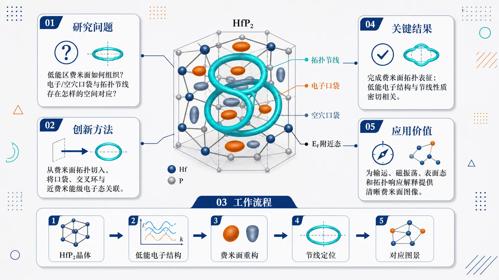
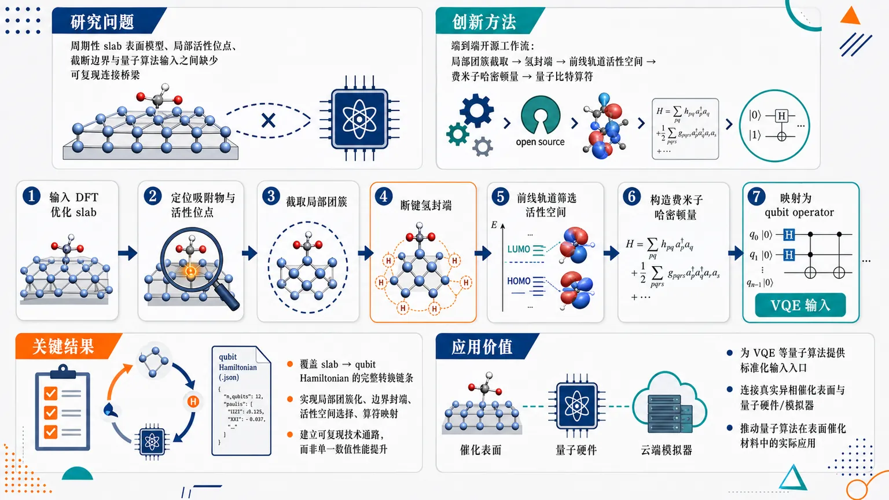
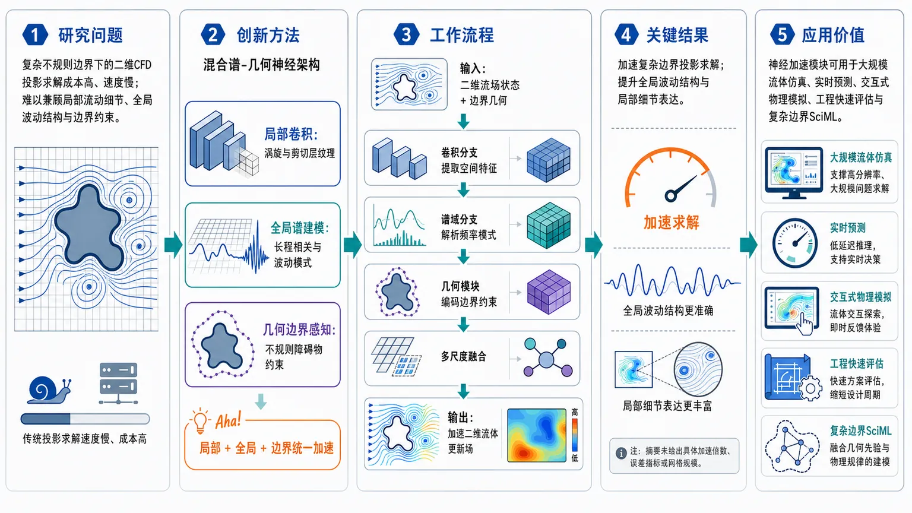

AI × Science 文献日报 2026/07/11
聚焦 AI × 物理 / 化学 / 材料交叉方向，自动过滤明显偏题的医学、教育与社会科学内容，并按主题重新排版，便于快速深读。
AI | 物理 | 化学 | 材料 | 交叉学科 | arXiv | 预印本追踪
原始候选 21 篇中，已剔除 0 篇明显偏离主线的内容，并从剩余 21 篇主线相关文献中精选 14 篇进入日报页，优先保留 AI × 物理 / 化学 / 材料交叉与关键计算方法工作。
核心关注（ML × ferro / 凝聚态）
5 篇今日进展偏向“谱图/场数据到物理结构”的判别与替代求解，而非 NbOI2、CrI3、CrSBr、BaTiO3 中常见的 DFT+U、equivariant GNN、MACE 或 NEP 原子尺度路线。CNN 被用于把电化学阻抗谱直接映射到等效电路拓扑，PARA-PV 用冻结基础模型、物理感知检索和分布漂移校正处理光伏非平稳时序。凝聚态侧的实质材料对象是 HfP2，其费米面拓扑服务于节线半金属能带判定；片上单光子斯格明子源则把拓扑光场压缩到集成量子光子平台。
-
01用CNN判定电化学阻抗等效电路Determination of equivalent circuits for electrochemical impedance spectra using convolutional neural networks
📄 摘要：面向电化学阻抗谱解析，采用卷积神经网络从谱图特征自动判定对应等效电路。方法针对传统人工选型依赖经验、组合空间大的问题，把阻抗响应映射到电路拓扑类别；摘要未给出数据集规模、准确率或具体电池/电极体系。
💡 亮点：CNN 被用于从电化学阻抗谱直接识别等效电路。若能稳定泛化到不同电极与界面过程，可降低阻抗谱建模的人为偏差。
📐 方法要点：用CNN从阻抗谱图特征分类等效电路拓扑。
🔗 相关工作关联：呼应EIS自动解析、谱图分类、等效电路搜索和电池诊断。
💡 对你方向的启示：可将铁电漏电、界面极化、畴壁阻抗谱转为可监督拓扑判别任务。
-
02PARA-PV物理感知检索增强光伏预测PARA-PV: Physics-Aware Retrieval-Augmented PV Prediction Based on Frozen Foundation Model and Distribution Shift Correction
📄 摘要：PARA-PV 将多变量光伏观测编码为片段级表征，在冻结基础模型上引入物理感知检索与分布漂移校正。框架显式处理天气波动、昼夜切换、不同运行状态动力学和光伏功率物理约束；摘要未给出测试电站数量或误差指标。
💡 亮点：PARA-PV 把物理约束、检索增强和冻结基础模型结合用于光伏功率预测。其关键在于同时校正分布漂移与昼夜/天气状态切换。
📐 方法要点：冻结基础模型结合物理感知检索与分布漂移校正。
🔗 相关工作关联：呼应时序基础模型、RAG、物理约束预测和非平稳能量系统建模。
💡 对你方向的启示：适合借鉴到铁电疲劳、磁相变和器件老化的跨工况预测。
-
03片上超表面单光子斯格明子源Chip-integrated metasurface-enabled single-photon skyrmion sources
📄 摘要：构建超表面集成量子发射体平台，在室温片上产生单光子斯格明子，且无需外加磁场。工作解决纳米尺度量子发射体约束下单光子拓扑光场难以片上生成的问题，体系面向集成量子光子学与结构化单光子态操控。
💡 亮点：超表面与量子发射体集成后，在室温、无磁场条件下产生单光子斯格明子。该平台把拓扑光场自由度引入片上量子光源。
📐 方法要点：超表面集成量子发射体生成片上单光子斯格明子。
🔗 相关工作关联：呼应拓扑光子学、结构光场、单光子源和片上量子光子集成。
💡 对你方向的启示：提示可用可微电磁设计或生成模型反演拓扑光场与纳米结构。
-
04混合谱几何网络加速二维流体计算Accelerating Two-Dimensional Computational Fluid Dynamics via Hybrid Spectral-Geometric Neural Architectures
📄 摘要：提出二维流体仿真的混合神经架构，将卷积网络的局域特征提取与谱方法的全局波分辨能力结合，用于复杂不规则边界附近的大尺度流动。目标是替代代价高昂的投影求解器，服务实时或近实时多尺度流体计算；摘要未列具体加速比。
💡 亮点：该架构用局域卷积处理边界附近结构，用谱模块捕捉全局波动。它瞄准复杂几何二维 CFD 的实时替代求解。
📐 方法要点：混合卷积局域表征与谱全局模态的二维流体网络。
🔗 相关工作关联：呼应神经算子、Fourier谱方法、几何深度学习和CFD替代求解器。
💡 对你方向的启示：可迁移到相场畴演化、磁流体耦合和缺陷边界动力学加速。
-
05拓扑节线半金属HfP2的费米面拓扑Fermi surface topology of the topological nodal-loop semimetal HfP 2
📄 摘要：围绕拓扑节线半金属 HfP2 的费米面拓扑开展研究，核心问题是费米面形貌与节线能带拓扑之间的对应关系。摘要未提供具体实验技术、量子振荡频率、载流子参数或第一性原理细节，但主题指向 HfP2 拓扑电子结构的判定。
💡 亮点：HfP2 被作为拓扑节线半金属检验费米面拓扑。费米面信息可约束节线位置及低能准粒子结构。
📐 方法要点：解析HfP2费米面形貌与拓扑节线能带的对应。
🔗 相关工作关联：呼应拓扑半金属、量子振荡、ARPES、第一性原理能带拓扑判定。
💡 对你方向的启示：为ML识别费米面拓扑、主动筛选节线材料提供标注范式。
今日摘要
总览：今日 14 篇覆盖量子材料、纳米光子学、电化学与 AI for science：HfP2 费米面、铜氧化物光诱导相涨落、二维自旋1分形子液体等聚焦凝聚态前沿。方法学方向中，CNN 判别电化学阻抗等效电路、冻结基础模型增强光伏预测、多智能体形式化张量网络理论，显示物理约束与学习模型的深度耦合。
热点：量子材料侧重可直接实验验证的拓扑与强关联现象，时间分辨 ARPES、费米面测量和量子蒙特卡洛成为核心证据链。光子与量子器件向片上、室温、通信波段推进，单光子斯格明子与 Er3+ 掺杂量子点电致发光是代表。AI for science 方向强调物理先验、检索增强、神经符号和多智能体协作，不再只追求黑箱拟合。量子计算应用仍在补齐工作流环节，从表面吸附 DFT 模型到可执行费米子/量子比特哈密顿量的自动抽取成为关键接口。
今日文献
14 篇 · 7 含图深析-
01
📊 含图深析
📄 摘要：面向电化学阻抗谱解析，采用卷积神经网络从谱图特征自动判定对应等效电路。方法针对传统人工选型依赖经验、组合空间大的问题，把阻抗响应映射到电路拓扑类别；摘要未给出数据集规模、准确率或具体电池/电极体系。
💡 亮点：CNN 被用于从电化学阻抗谱直接识别等效电路。若能稳定泛化到不同电极与界面过程，可降低阻抗谱建模的人为偏差。
📖 展开分析 + 配图
研究问题电化学阻抗谱的等效电路拓扑通常依赖专家凭经验手动筛选，容易出现主观性强、重复性差、解释效率低的问题；核心问题是如何让机器从Nyquist/Bode等阻抗谱特征中自动识别对应的等效电路结构。创新方法将“等效电路选择”从人工判读任务转化为卷积神经网络分类任务：把阻抗谱曲线特征作为可学习图像/序列模式输入，让CNN自动捕捉弧形、扩散尾、时间常数等谱图形态，并直接输出最可能的电路拓扑，这是论文的Aha点。工作流程输入电化学阻抗谱数据 → 提取或表示阻抗谱特征 → 构建带有已知等效电路标签的训练样本 → 训练卷积神经网络学习“谱图形态—电路拓扑”的映射 → 对未知阻抗谱进行自动分类 → 输出候选等效电路结构，用于后续参数拟合与机理解释。关键结果论文表明卷积神经网络能够根据阻抗谱特征自动判定等效电路拓扑，使传统依赖人工经验的电路筛选过程具备自动化和可复现性；摘要未给出具体准确率、候选电路数量或与传统方法的定量性能对比。应用价值可作为电池、腐蚀、界面反应等电化学体系的阻抗谱自动解析工具，帮助研究人员快速锁定合理等效电路，减少专家经验门槛，提高EIS分析效率、标准化程度和结果一致性。核心概览
本文属于电化学阻抗谱（EIS）智能解析/材料计算方向，使用卷积神经网络从频率响应曲线中自动识别等效电路结构，以减少人工拟合和候选电路枚举。
方法要点
- 将电化学阻抗谱的频率响应曲线作为输入，用卷积神经网络进行等效电路结构判定。
- 目标任务是等效电路识别，而非仅进行参数拟合。
- 方法意在替代或减少传统依赖人工经验与大量候选电路枚举的分析流程。
- 具体网络结构、训练数据构造、标签体系、损失函数和评估方案：摘要未详述。
关键结果
- 摘要明确指出，该方法可用于从阻抗谱频率响应中判定等效电路结构。
- 论文目标是提升电化学阻抗谱解析的自动化程度和可扩展性。
- 摘要未给出具体准确率、对比基线、适用电路类型范围或实验数据规模。
创新性判断
- 可能的新颖点在于：将卷积神经网络用于电化学阻抗谱的等效电路结构自动识别，而不是依赖人工选择候选电路后再拟合参数。
- 相对传统 EIS 分析流程，其潜在创新性体现在自动化、减少人为主观性、降低候选模型枚举成本。
- 是否显著优于已有机器学习或深度学习方法、是否支持复杂真实体系、是否具备跨材料/跨实验条件泛化能力，摘要未详述，因此不能确定。
-
02
📊 含图深析
📄 摘要：PARA-PV 将多变量光伏观测编码为片段级表征，在冻结基础模型上引入物理感知检索与分布漂移校正。框架显式处理天气波动、昼夜切换、不同运行状态动力学和光伏功率物理约束；摘要未给出测试电站数量或误差指标。
💡 亮点：PARA-PV 把物理约束、检索增强和冻结基础模型结合用于光伏功率预测。其关键在于同时校正分布漂移与昼夜/天气状态切换。
📖 展开分析 + 配图
研究问题光伏功率预测在云运动、辐照度变化、昼夜切换、峰值出力、快速爬坡、夜间零出力和低功率状态下容易产生偏差；现有深度模型多依赖时序拟合，常把物理规律当作附加约束，导致相似形状被误判为相似工况、基础模型先验不符合光伏边界、天气与时间变化引发预测分布偏移。创新方法提出 PARA-PV：把物理知识贯穿检索、基础模型校准、分布修正和损失优化。核心 Aha 点是“表征相似不等于物理相似”：PA-RAL 检索不仅看时序形状，还同时匹配功率水平、运行状态和日内位置；冻结 Chronos 只提供通用时间序列先验，再由轻量残差适配器校准；PA-DSC 在预测后根据天气评分、昼夜和时间条件施加门控均值偏移与尺度修正；分段损失对峰值、爬坡、夜间、常规状态自适应平衡。工作流程输入历史多变量光伏窗口，包括功率、辐照度、温度、湿度、气压和时间标记；先切分为重叠 patch 并编码为局部时序 token；从物理记忆库中按形状、功率、状态、日内 bucket 检索 Top-K 历史片段和模拟轨迹；融合局部检索记忆与当前窗口全局注意力表示，生成 PA-RAL 基础预测；调用冻结 Chronos 产生未来轨迹先验，用残差适配器与基础预测融合；再由 PA-DSC 根据近期功率、TOPSIS 天气评分、时间戳、昼夜标记修正均值和尺度；最后输出点预测或分位数预测，并用物理状态分段损失训练。关键结果在两个地理位置不同的光伏电站上，PARA-PV 相比七类代表性基线在多个预测步长下获得更低点预测误差，并生成更尖锐的预测区间；模型可训练参数少于 100 万，说明冻结基础模型加轻量校准能保持参数效率；实验表明物理一致检索、Chronos 先验校准、分布偏移校正和工况平衡损失共同提升峰值、爬坡、夜间、低功率等关键状态下的可靠性。应用价值该研究为电网调度、储能控制、备用容量安排、需求响应和新能源消纳提供更可靠的光伏功率预测；能够减少夜间非零预测、峰值误判和爬坡滞后等运行风险；适合部署在参数预算有限但需要跨天气、跨昼夜工况稳定预测的光伏电站管理系统中。第一部分：核心概览 (Overview)
PARA-PV 将物理知识从辅助约束提升为贯穿预测链路的核心机制，面向光伏功率预测中的天气波动、昼夜转换、峰值出力、爬坡过程、低功率状态与分布偏移问题，构建了由 PA-RAL 物理感知检索增强学习器、冻结 Chronos 时间序列基础模型先验校准、PA-DSC 物理感知分布偏移校正和分段平衡物理约束损失组成的框架。其学术位置在于把近年的检索增强预测、时间序列基础模型迁移与光伏物理运行状态建模系统融合，目标不是单纯增加深度模型复杂度，而是提升不同运行工况下的可靠性与物理一致性。
---
第二部分：结构化快速回顾
《PARA-PV: Physics-Aware Retrieval-Augmented PV Prediction Based on Frozen Foundation Model and Distribution Shift Correction》（None，）
背景
光伏功率预测直接影响电网调度与可再生能源消纳，但光伏输出同时受辐照度、云运动、温度、湿度、昼夜周期和容量上限、夜间零出力、峰值出力、快速爬坡等物理机制约束。传统统计模型、机器学习模型和深度时序模型虽然能拟合历史数据，但在复杂天气和运行状态变化下容易出现物理不一致预测与工况偏置。
方法
PARA-PV 包含四个核心模块：
- PA-RAL：把多变量光伏序列编码为 patch 表征，并从记忆库中检索在时序形状、功率水平、运行状态、日内位置上相似的历史片段和模拟轨迹。
- Chronos-guided prior calibration：调用冻结的 Chronos 时间序列基础模型生成通用未来时序先验，再用轻量残差适配器校准到光伏场景。
- PA-DSC：基于历史功率、TOPSIS 天气评分、时间戳、昼夜指示器，对预测结果施加门控均值偏移与尺度校正。
- Physics-constrained loss：将样本划分为峰值、爬坡、夜间、常规状态，并自适应重加权误差。
结果
实验覆盖两个地理位置不同的光伏电站，并与七类代表性基线比较。PARA-PV 在多个预测步长下获得更低的点预测误差与更尖锐的预测区间，且可训练参数少于 1M。所给材料未包含具体 MAE、RMSE、MAPE、CRPS、PICP、PINAW 等表格数值。
讨论
核心思想是用物理一致检索降低单纯表征相似带来的误检索，用冻结基础模型提供广域时序先验，用后预测分布校正缓解天气和昼夜条件改变造成的条件分布偏移，用工况平衡损失防止常规样本主导训练。
局限
可见局限包括：对训练集估计阈值、记忆库质量、天气评分可靠性和Chronos 先验适配效果存在依赖；检索模块需要维护 memory bank；所给材料未展示跨季节、跨电站迁移、极端天气、消融统计显著性或真实部署延迟等完整证据。
结论
PARA-PV 提供了一种面向光伏预测的物理感知检索增强 + 冻结基础模型校准 + 分布偏移校正 + 分段损失优化范式，在提升预测精度的同时强化了峰值、爬坡、夜间和低功率等关键运行状态的建模能力。
---
第三部分：逐章节冷凝解析 (Section-by-Section Condensing)
Abstract
- Physics-aware forecasting as the central contribution
光伏预测困难被界定为多因素耦合问题：天气变化、昼夜转换、状态依赖动态、严格物理约束共同塑造功率输出。摘要直接指出，准确预测对电网调度和新能源并网至关重要：*"Accurate photovoltaic (PV) power forecasting is essential for reliable grid dispatch and renewable energy integration"*。挑战来自多重机制叠加：*"PV generation is jointly shaped by weather variability, day-night transitions, regime-dependent dynamics, and strict physical constraints"*。
- Model complexity alone is insufficient
现有数据驱动方法主要通过更复杂的时序表征提升性能，但对光伏专属物理知识利用不足，在峰值、爬坡、低功率条件下可能产生偏置。原文明确批评：*"Existing data-driven methods typically improve temporal representation learning by increasing model complexity, but they insufficiently exploit PV-specific physical knowledge and may produce biased forecasts under peak, ramping, or low-power conditions"*。
- PA-RAL retrieves physically consistent historical patches
PARA-PV 首先把多变量观测编码成 patch-level representations，再检索与当前窗口在时序形状、功率水平、运行状态、日内时段一致的历史 patch 和模拟轨迹。关键机制为：*"retrieves historical patches and analog trajectories that are consistent with the current window in temporal shape, power level, PV operating state, and intra-day period"*。这种检索产生的是physically grounded base forecast，即带物理上下文约束的基础预测。
- Frozen Chronos prior is calibrated rather than directly trusted
Chronos 作为冻结的时间序列基础模型提供通用时序先验，但不会直接覆盖 PA-RAL 的物理基础预测；轻量残差适配器负责校准。摘要表述为：*"the base forecast is then calibrated against a frozen Chronos time-series foundation-model prior through a lightweight residual adapter"*，其目的在于让通用规律适配光伏特定动态：*"general temporal regularities are adapted to PV-specific dynamics without overriding the physically grounded prediction"*。
- Distribution shift correction targets residual conditional bias
即便经过检索和基础模型校准，天气与昼夜状态变化仍会造成residual conditional distribution shifts。PA-DSC 使用功率、天气、时间戳、昼夜条件进行后预测校正：*"adjusts the preliminary forecast using power, weather, timestamp, and day/night conditions"*，并选择性施加：*"gated mean-shift and scale corrections selectively"*。
- Physics-constrained loss balances rare but critical regimes
损失函数把样本划分为peak、ramping、night-time、regular，并自适应重加权，避免常规样本压制关键状态学习。核心证据为：*"partitions the samples into peak, ramping, night-time, and regular regimes and adaptively reweights their error contributions"*；目标是防止：*"the dominant regular regime from suppressing learning of operationally critical states"*。
- Experimental claim with limited reported numeric detail in supplied text
实验覆盖两个地理上不同的光伏电站，比较七个代表性基线，并宣称在多预测步长上优于基线：*"Experiments on two geographically distinct PV farms demonstrate that PARA-PV consistently outperforms seven representative baselines across multiple forecasting horizons"*。参数效率为少于 100 万可训练参数：*"with fewer than 1M trainable parameters"*。所给材料未提供具体误差数值、置信区间数值或显著性检验。
---
1 Introduction
1.1 Background and motivation
- PV forecasting is strategically important for low-carbon power systems
全球能源需求增长使可靠低碳能源系统建设成为紧迫问题，太阳能具备清洁性、可扩展性、地理可获得性优势。原文表述为：*"solar energy offers clear advantages in terms of cleanliness, scalability, and wide geographical availability"*。光伏发电在技术进步和政策支持下快速扩张：*"PV generation has expanded rapidly and is becoming an increasingly important component of modern power systems"*。
- Grid integration depends on accurate PV forecasting
光伏预测是电网并网和能源管理的关键基础：*"Accurate PV power forecasting is essential for grid integration of solar power and energy management"*。该判断对应的应用场景包括调度、备用容量安排、储能控制、需求响应和可再生能源消纳。
- PV output is governed by both meteorology and physical regimes
光伏输出不仅由辐照度、云运动、昼夜周期等变量影响，还受夜间零出力、容量限制、峰值生产、快速爬坡约束。原文列举为：*"multiple meteorological and temporal variables, such as irradiance, cloud movement, and diurnal cycles"*，以及：*"physical operating regimes including night-time zero generation, capacity limits, peak production, and rapid ramping dynamics"*。
- Deep temporal architectures remain unreliable under complex operating conditions
尽管模型已从统计方法发展到深度时序架构，复杂气象和运行条件下的可靠性仍不足：*"Although PV forecasting models have evolved from statistical methods to deep temporal architectures, their predictive reliability remains limited under complex meteorological and operating conditions"*。
- First core limitation: physical constraints are underused
许多现有模型强调更强表达能力，却不足以纳入夜间零功率、容量上限、峰值发电、快速爬坡等物理限制。原文指出：*"many existing models mainly pursue more expressive data-driven architectures, but they insufficiently incorporate the physical constraints of PV generation"*。结果是历史拟合良好但在工况变化时产生物理不一致或状态偏置预测：*"may fit historical observations well but still produce physically inconsistent or regime-biased forecasts"*。
- Second core limitation: time-series foundation models are not fully exploited
时间序列基础模型可提供通用时序先验，但 PV 场景中如何校准仍不足。原文指出：*"most studies have not fully exploited recent advances in time-series foundation models, whose general temporal modeling capability can provide useful priors for prediction when properly calibrated"*。
- Third core limitation: post-prediction distribution correction is neglected
现有研究常把天气和时间变量作为输入，却较少处理预测之后的分布偏移校正。原文强调：*"existing approaches often focus on improving the forecasting model itself while paying less attention to post-prediction distribution shift correction"*。仅把变量输入模型并不等同于消除预测偏差：*"simply using weather or time variables as model inputs may improve accuracy, but it does not fundamentally correct the distributional bias of prediction"*。
---
1.2 Related work
- Physical models are interpretable but parameter- and weather-dependent
物理模型通过描述光伏系统能量转换过程进行预测，依赖太阳辐照、组件特性、系统配置。定义性描述为：*"Physical models estimate power generation by describing the energy conversion process of PV systems based on solar irradiance, module characteristics, and system configuration"*。Zhi 等方法结合气象参数预测、辐照计算、等效电路模型和改进最大功率跟踪算法，在不同天气下达到 15.9% MAE：*"achieving a mean absolute error of 15.9% under various weather conditions"*。其弱点是依赖气象输入和系统细节：*"their performance often depends on the accuracy of meteorological inputs and detailed system parameters"*。
- Statistical models are efficient but weak on nonlinear dynamics
ARIMA 和回归模型通过历史功率和解释变量建立数学关系。原文概括为：*"mainly establish mathematical relationships between historical PV power observations and relevant explanatory variables, offering efficient prediction"*。Doubleday 等提出贝叶斯模型平均后处理方法，用加权概率密度函数校准 NWP 集成偏差：*"calibrates biased numerical weather prediction ensembles through weighted probability density functions"*。局限在于复杂非线性建模能力不足：*"they often face challenges in modeling complex nonlinear relationships"*。
- Traditional machine learning improves nonlinear fitting but lacks robustness and interpretability
SVR、RF、GBDT 等广泛用于时间序列预测。Eseye 等 Hybrid Wavelet-PSO-SVM 结合小波变换和 SVM 建模 NWP 变量与光伏功率的非线性关系：*"integrates wavelet transform and support vector machine to model nonlinear relationships between numerical weather prediction variables and PV power"*。Hategan 等加权集成模型结合机器学习与天空图像方法，提高小时内预测精度：*"combines machine learning and sky-image-based methods, improving intra-hour PV power forecasting accuracy"*。总体弱点为：*"strong data dependence, weak physical interpretability, and reduced robustness under rapidly changing weather conditions"*。
- Deep learning captures nonlinear temporal patterns but often remains data-driven
RNN、GCN、Transformer 等用于光伏预测，优势是捕捉复杂非线性时序模式。原文表述为：*"Deep learning models have been increasingly used for PV power forecasting due to their stronger ability to capture nonlinear temporal patterns"*。Liu 等 PBiLSTM-CNN 结合多模态分解、并行 BiLSTM 和 CNN 提取气象与时序特征：*"combines multimodal decomposition with parallel bidirectional long short-term memory and convolutional neural network"*。Kim 等 PVTransNet 融合历史功率、天气观测、天气预报和太阳几何数据：*"integrates historical PV power, weather observations, weather forecasts, and solar geometry data for multi-step day-ahead forecasting"*。Tian 和 Liang 的 PVMTF 使用 patch-based temporal modeling 与 information-fusion coding 增强中期预测：*"combines patch-based temporal modeling with information-fusion coding to enhance mid-term PV power prediction"*。
- Physics-informed PV forecasting is growing but often partial
近期工作开始重视物理约束，如夜间不发电、容量限制、辐照变化下的爬坡。原文概括为：*"Recent studies have increasingly focused on incorporating physical constraints into PV power forecasting"*。Liu 等双物理驱动框架结合物理一致数据重构和边界约束 DLSTM：*"integrates physics-consistent data reconstruction with a boundary-constrained DLSTM predictor"*。但这些物理约束更多是局部模块或辅助约束，尚未贯穿预测流程。
- Foundation-model adaptation is emerging but underexplored for PV-specific dynamics
大语言模型和时间序列基础模型引入新范式：*"general temporal knowledge learned from large-scale data can be adapted to energy time-series prediction"*。Gao 等冻结预训练 LLM 的 reprogramming 框架用于少样本日前太阳辐照预测：*"transfers prior knowledge from a frozen pre-trained LLM to few-shot day-ahead solar-irradiation forecasting"*。He 等把光伏预测转化为文本生成任务，并通过 cross-attention 和 DQ-LoRA 对齐文本提示和数值特征：*"transforms PV forecasting into a text-generation task and aligns textual prompts with numerical features through cross-attention and DQ-LoRA"*。PARA-PV 的定位更接近冻结时间序列基础模型先验校准，而非把数值预测完全重编程为文本生成。
- Weather fusion remains central but interaction modeling is insufficient
气象变量与光伏发电强相关，因此天气融合是关键方向。Dai 等基于天气类型可信度预测和多模型动态组合，估计日前天气类型预报可靠性并自适应选择模型：*"estimates the reliability of day-ahead weather-type forecasts and adaptively selects forecasting models"*。不足在于气象信息与时序模式及运行状态变化之间的交互常未显式建模。
- Four research gaps define the need for PARA-PV
研究空白被明确归纳为四点：
- 物理知识常作为辅助约束，而非贯穿预测全过程：*"still treat physical knowledge as an auxiliary constraint rather than integrating it throughout the forecasting process"*。
- 通用时序先验如何适配 PV 动态仍不足：*"how to effectively adapt general temporal priors to PV-specific dynamics remains insufficiently explored"*。
- 气象信息与时间模式及运行状态交互未充分显式建模：*"its interaction with temporal patterns and changing PV operating states is not always explicitly modeled"*。
- 通用误差目标难以平衡正常、极端、过渡时段：*"optimized with generic error objectives, making it difficult to balance prediction accuracy across normal, extreme, and transition periods"*。
---
1.3 Contributions
- PARA-PV integrates retrieval, foundation prior, distribution correction, and regime-aware training
PARA-PV 被定义为面向光伏预测的physics-aware retrieval-augmented framework。完整流程包括 patch 级编码、物理一致历史检索、冻结 Chronos 校准、分布偏移校正、分段物理损失。原文概括为：*"PARA-PV first encodes multivariate PV observations into patch-level temporal representations and retrieves physically consistent historical patterns from a memory bank"*，随后：*"calibrates the prediction using a frozen Chronos temporal prior"*，并：*"corrects regime-dependent distribution shifts through a physics-aware correction module"*。
- Contribution 1: PA-RAL builds dual memory at feature and trajectory levels
PA-RAL 的记忆库保存两类历史信息：latent patch representations 和 analog power trajectories。原文称：*"stores two complementary forms of historical information: latent patch representations for feature-level memory enhancement and analog power trajectories for trajectory-level forecasting guidance"*。检索分数综合时序形状、功率水平一致性、PV 状态一致性、日内接近性：*"jointly considers temporal shape, power-level consistency, PV-state agreement, and intra-day proximity"*。
- Contribution 1: analog trajectories are aligned rather than copied
检索到的模拟轨迹按置信度聚合，并对齐到最新观测功率，避免直接复制不匹配绝对幅值。原文强调：*"aligned to the latest observed power value, so that their evolution patterns can serve as a trajectory prior without directly copying mismatched absolute magnitudes"*。这一区别很关键：使用的是演化形状 prior，不是最近邻标签泄漏式复制。
- Contribution 2: Chronos prior is residual-calibrated for PV-specific dynamics
冻结 Chronos 接收归一化历史 PV 序列，产生未来功率轨迹的通用时序先验。该先验不直接作为最终结果：*"This prior is not directly used as the final forecast because a foundation model trained on broad time-series data may not fully capture local PV operating constraints"*。残差适配器输入包括 Chronos prior、PA-RAL base prediction、二者残差、近期功率、局部波动和 PV 状态元数据：*"their residual difference, recent power observations, local variability, and PV-state metadata"*。
- Contribution 3: PA-DSC corrects conditional distribution shifts after prediction
PA-DSC 面向天气、昼夜、运行状态变化造成的条件分布偏移：*"PV power generation is highly sensitive to weather variability, day-night transitions, and operating regimes"*。输入通道为四类：历史功率序列、TOPSIS 天气评分、时间戳信息、昼夜指示器：*"the historical power sequence, a TOPSIS-based weather score, timestamp information, and a day/night indicator"*。输出三个校正因子：均值偏移、尺度调整、校正门：*"a mean shift, a scale adjustment, and a correction gate"*。
- Contribution 4: physics-constrained loss addresses regime imbalance
普通损失对所有时间步等权，会削弱稀疏但关键样本，如峰值和快速爬坡。原文指出：*"Standard forecasting losses assign the same importance to all time steps, which may weaken the learning signal for sparse but operationally important cases such as peak generation and rapid ramping"*。所提出损失恢复物理功率尺度后将样本划分为峰值、爬坡、夜间、常规状态，并自适应平衡贡献：*"partitions samples into peak, ramping, night-time, and regular regimes, and adaptively balances their loss contributions"*。
---
2 Problem Formulation
- PV data are defined as multivariate observations with target power and covariates
每个时间步观测为 (xₜ₌[zₜ,yₜ]inR^C)，其中 (yₜ) 是光伏功率，(zₜᵢₙRC⁻¹) 是协变量。原文定义为：*"where (yₜᵢₙR) is the PV power output at time step (t), and (zₜᵢₙRC⁻¹) denotes the associated covariates"*。协变量例子包括：*"solar irradiance, temperature, humidity, atmospheric pressure, and temporal markers"*。
- Historical look-back window and future horizon are explicitly formalized
回看窗口长度为 (L)，历史输入为 (Xₜ₋L₊₁:ₜinRL× C)，未来目标轨迹为 (Yₜ₊₁:ₜ₊HinRH)。原文给出：*"Given a look-back window of length (L), the historical input is defined as (Xₜ₋L₊₁:ₜ)"*，未来为：*"The corresponding future PV power trajectory over a prediction horizon (H) is (Yₜ₊₁:ₜ₊H)"*。
- Point forecasting is a deterministic sequence-to-sequence mapping
点预测目标是学习 (f_θ:RL× Ci̊ghtarrowRH)，从历史窗口输出未来功率确定性估计：*"the objective is to learn a parameterized mapping (fθ:RL× Ci̊ghtarrowRH)"*。预测式为：(hatYₜ₊₁:ₜ₊H=f_θ(Xₜ₋L₊₁:ₜ))。训练通过平均点预测损失最小化：*"optimized by minimizing the forecasting error over all training windows"*。
- Probabilistic forecasting is represented by predictive quantiles
概率预测估计条件分布 (p_θ(Yₜ₊₁:ₜ₊HmidXₜ₋L₊₁:ₜ))，并用分位数表示不确定性。原文定义：*"probabilistic forecasting aims to estimate the conditional distribution"*，并说明：*"In this work, the distribution is represented by predictive quantiles"*。每个分位水平 (τinT) 输出 (hatQτ,ₜ₊₁:ₜ₊HinRH)。
- Pinball loss is used for quantile learning
分位数预测训练目标为所有样本和所有分位水平上的平均 pinball loss。原文给出：*"The model parameters are learned by minimizing the average pinball loss over all training samples and quantile levels"*。损失形式为 (h̊o_τ(u)=max(τ u,(τ-1)u))，这是分位数回归的标准非对称绝对误差。
---
3 Methodology
3.1 Overall framework of PARA-PV
- PARA-PV consists of four coupled modules
总体框架整合历史模拟检索、基础模型时序先验、分布校正、物理引导损失。原文定义为：*"PARA-PV is designed as a physics-aware forecasting framework that integrates historical analog retrieval, foundation-model temporal priors, distribution correction, and a physically-guided loss function"*。
- PA-RAL produces the base forecast through physically consistent retrieval
第一阶段 PA-RAL 从记忆库检索物理一致的历史 patch，并融合潜在表征和模拟轨迹生成基础预测。原文为：*"retrieves physically consistent historical patches from a memory bank and fuses their latent representations and analog trajectories to produce the base forecast"*。
- Frozen Chronos provides a general temporal prior but requires calibration
第二阶段冻结 Chronos 给出通用时序先验，轻量残差适配器将其校准并与 PA-RAL 预测融合。原文为：*"a frozen Chronos time-series foundation model provides a general temporal prior, which is calibrated by a lightweight residual adapter"*。
- PA-DSC corrects regime-dependent bias after forecasting
第三阶段使用最近功率、天气评分、时间戳和昼夜指示器进行后预测校正。原文为：*"uses recent power observations, weather-derived scores, timestamp information, and day/night indicators to correct regime-dependent prediction bias after forecasting"*。
- Physics-constrained loss forces attention to rare operational regimes
第四阶段用物理约束损失将样本划分为操作状态并重加权。原文为：*"partitions PV samples into operating regimes and adaptively reweights forecasting errors"*，目标是同时学习常见和关键状态：*"learn both dominant generation patterns and important low-power, peak, and ramping states"*。
---
3.2 Physics-aware retrieval-augmented Learner (PA-RAL)
- Temporal patterns alone cannot determine future PV generation
光伏未来输出不能仅凭时序形状判断，还取决于历史动态、天气、昼夜周期和物理工况交互。原文指出：*"future generation cannot be inferred from temporal patterns alone"*，而是依赖：*"the interaction between historical dynamics, meteorological conditions, diurnal cycles, and the physical operating regime of the PV system"*。
- Similar short-term shapes may correspond to different PV states
两段序列即便短期波动相似，也可能处于低输出、快速爬坡或峰值生产等不同状态。原文为：*"Two PV sequences may show similar short-term variations but correspond to different generation states, such as low output, rapid ramping, or peak production"*。这说明普通向量相似度检索容易产生物理错配。
- Feature-only retrieval can select physically mismatched samples
仅基于表征相似度的检索可能选到功率水平、运行状态或日内位置不一致的样本。原文警告：*"retrieval based solely on feature similarity may select samples that are close in representation space while differing in power level, operating state, or intra-day position"*。
- PA-RAL creates physically meaningful memory instead of purely data-driven neighbors
PA-RAL 将 patch 级时序检索与功率水平、运行状态、日内 bucket元数据结合，使记忆库具备物理意义。原文表述为：*"combines patch-level temporal retrieval with PV-specific metadata, including power level, operating state, and intra-day bucket"*，从而构建：*"a physically meaningful memory rather than a purely data-driven nearest-neighbor set"*。
---
3.2.1 Patch representation and physics-aware memory bank
- Patch embedding converts multivariate PV windows into local temporal tokens
输入为归一化多变量 PV 序列 (XₜᵢₙRB× L× C)，其中 (B,L,C) 分别为 batch size、序列长度、变量数。PA-RAL 将每个通道序列切分成长度 (P)、步长 (S) 的重叠 patch，并线性投影到 (dₘₒdₑₗ) 维空间。原文为：*"divides each channel-wise time series into overlapping patches of length (P) with stride (S)"*，产生：(EₜᵢₙRBC× Nₚ× dₘₒdₑₗ)。patch 数量为 (Nₚ₌łeftłfloorfracL+Pₐd-PSi̊ghtf̊loor+1)。
- Patch-level retrieval focuses on short-term local patterns
每个变量通道被表示为局部时序 token 序列，使检索针对短期形态而不是原始整段序列。原文说明：*"each variable channel is represented as a sequence of local temporal tokens, enabling retrieval to be performed on short-term temporal patterns rather than on the raw input sequence"*。
- Memory bank stores both latent and physical forms
完整记忆库为 (M=(mⱼ,rⱼ,pⱼ,sⱼ,bⱼ₎ⱼ₌₁M)，其中 (M) 是最大记忆大小。每个条目包含潜在表征、模拟轨迹、三个 PV 元数据变量。原文为：*"Each memory item contains a compact latent representation, an analog trajectory, and three PV-related metadata variables"*。
- Latent key is produced by mean pooling over patch embeddings
潜在表征 (mⱼᵢₙRdₘₒdₑₗ) 用于特征级检索，通过通道 patch 序列均值池化得到：(P(Eₜ_ⱼ,c_ⱼ)=frac1Nₚsumₙ₌₁NₚEₜ_ⱼ,c_ⱼ,ₙ)。原文定义为：*"We define a shared mean-pooling operator for a channel-wise patch sequence"*。
- Analog trajectory avoids future-label leakage
(rⱼᵢₙRH) 是历史模拟轨迹，从相关历史输入序列最近 (H) 个时间步提取，而不是未来标签。原文强调：*"it does not contain future-label information; instead, it preserves the recent evolution shape of a historical PV pattern"*。这点对于防止检索增强预测中的标签泄漏非常关键。
- Physical metadata encode power level, operating state, and intra-day position
(pⱼ) 表示物理功率尺度下的平均目标功率，(sⱼ) 表示类别型 PV 运行状态，(bⱼ) 表示日内时间 bucket。原文为：*"pⱼ denotes the average target-power level... sⱼ denotes a categorical PV operating state, and bⱼ denotes the intra-day temporal bucket"*。状态集合为 (sⱼᵢₙ0,1,2,3)，分别对应：*"low-power, regular generation, peak-generation, and ramping states"*。日内 bucket 为 (bⱼᵢₙ0,1,łdots,B_d-1)，实现中 (B_d=24)：*"in our implementation, (B_d=24)"*。
- Thresholds are estimated from the training split
状态划分阈值来自训练集：(τₗₒw) 为正训练功率值第 1 百分位，(τₚₑₐₖ) 为非低功率训练样本第 90 百分位，(τᵣₐₘₚ) 为相邻非零绝对功率差第 80 百分位。原文精确给出：*"τₗₒw is set to the 1st percentile of positive training power values, τₚₑₐₖ is set to the 90th percentile of non-low-power training samples, and τᵣₐₘₚ is set to the 80th percentile of non-zero absolute power differences between adjacent training time steps"*。
- State assignment follows priority rules
低功率状态：(pⱼłeqτₗₒw)；峰值状态：(yⱼmax>τₚₑₐₖ)；爬坡状态：(Δⱼ≥τᵣₐₘₚ,pⱼ>τₗₒw,yⱼmaxłeqτₚₑₐₖ)；其余为常规状态。原文公式定义为：*"The state label is assigned as"* 后给出分段函数。此规则意味着峰值优先于爬坡判定，爬坡判定排除了低功率与峰值样本。
---
3.2.2 Physics-aware retrieval mechanism
- Current query is pooled from patch-token representations
对当前预测起点 (t) 和变量通道 (c)，query 为 (qₜ,c=P(Eₜ,c)inRdₘₒdₑₗ)。原文为：*"Using the same pooling operator defined in Eq. (7), we construct the current query"*。
- Retrieval score combines four similarity terms
PA-RAL 同时考虑潜在时序形状相似、功率水平一致、PV 状态一致、日内位置接近。原文概括为：*"retrieves historical samples by jointly considering latent temporal similarity and PV operating-context consistency"*。
- Shape similarity uses cosine similarity
第一项 (Sₛₕₐₚₑ) 为 query 与记忆 key 的余弦相似度：(fracqₜ,c→pmⱼ|qₜ,c|₂|mⱼ|₂)。原文称：*"measures temporal-shape similarity in the latent representation space by cosine similarity"*。
- Power similarity uses normalized absolute power difference
第二项为 (Sₚₒwₑᵣ(pₜ,pⱼ₎₌frac11+|pₜ₋ₚⱼ|/σₚ)，其中 (σₚ) 归一化功率差。原文为：*"measures the consistency of power levels between the current window and the historical memory item"*。
- State similarity enforces categorical operating-state agreement
第三项为 (Sₛₜₐₜₑ(sₜ,sⱼ₎₌I(sₜ₌ₛⱼ₎)，即运行状态一致时为 1，否则为 0。原文为：*"encourages retrieval from the same PV operating state"*。
- Bucket similarity respects circular daily periodicity
第四项先计算圆形 bucket 距离：(d_b(bₜ,bⱼ₎₌min(|bₜ₋bⱼ|,B_d-|bₜ₋bⱼ|))，再定义 (Sbᵤcₖₑₜ=max(0,1-fracd_bB_d/2))。原文说明：*"Since the time of day is periodic, we first compute the circular bucket distance"*。这避免了午夜附近时间点在普通线性距离下被误判为相距很远。
- Similarity weights are learnable and softmax-normalized
最终检索分数为四项加权和，权重 (boldsymbolømega=softmax(boldsymbolη))。原文为：*"The final retrieval score is obtained by a learnable weighted combination of the four similarity terms"*，并指出：*"This design allows PA-RAL to adaptively determine the relative importance of temporal shape, power level, PV state, and intra-day position during training"*。
- Top-K retrieval and softmax confidence construct local memory
PA-RAL 选择 Top-(K) 记忆项，并用 softmax 将分数转为检索权重 (αₜ,c,ⱼ)。原文为：*"Based on the retrieval score, PA-RAL selects the top-(K) memory items"*，以及：*"converts their scores into normalized retrieval weights"*。最终实现的是既表征相近又物理工况一致的历史检索：*"not only close in learned temporal representation but also consistent with the physical generation regime and intra-day context"*。
---
3.2.3 Local and global memory fusion
- Retrieved local context is transformed and averaged
Top-(K) 潜在表征先经局部记忆网络 (fₗₒc)，再平均得到检索上下文 (hretₜ,cinRdₘₒdₑₗ)。原文为：*"The corresponding latent representations are first transformed by a local memory network and then averaged to obtain a retrieved local context"*。
- Local memory is injected through a residual connection
检索上下文加到当前每个 patch token 上：(Hlocₜ,c,ₙ=Eₜ,c,ₙ+hretₜ,c)。原文解释为：*"This retrieved context is injected into the current patch-token sequence through a residual connection"*。残差结构保留原始时序表示，同时注入历史物理相似样本信息：*"while the original temporal representation is preserved"*。
- Global memory is computed by multi-head self-attention
当前 patch 序列通过 MHA 得到 (Zₜ,cinRNₚ× dₘₒdₑₗ)。原文为：*"PA-RAL computes a global memory from the current patch sequence using multi-head self-attention"*。该操作捕获窗口内部 patch 的时序依赖：*"captures the internal temporal dependencies among patches within the current input window"*。
- Local and global contexts are additively fused
全局上下文 (hglobₜ,c) 由 MHA 输出均值池化得到，并加到局部增强 token 上：(Hmemₜ,c,ₙ=Hlocₜ,c,ₙ+hglobₜ,c)。原文解释为：*"where (Hloc) carries historical information retrieved from physically similar PV samples, whereas (hglob) encodes the temporal structure of the current input sequence"*。
- Forecasting head maps fused representation to horizon H
融合后的表示 flatten 后输入预测头，得到 (hatymemₜ,cinRH)。原文为：*"The fused representation is flattened and mapped to the prediction horizon by a forecasting head"*。该输出作为 PA-RAL 的 memory-based base prediction：*"serves as the memory-based base prediction of PA-RAL"*。
---
3.2.4 Analog trajectory enhanced fusion
- Latent retrieval alone lacks explicit evolution trajectories
检索 patch 表征可以增强当前输入表示，但无法直接说明相似历史窗口中的功率如何演化。原文指出：*"The retrieved latent patch representations enhance the representation of the current input, but they do not explicitly describe how PV power evolved in the corresponding historical windows"*。
- Analog prior aggregates retrieved trajectories by retrieval weights
模拟轨迹先按检索权重聚合：(baraₜ,c=sumⱼᵢₙN_K₍ₜ,c₎αₜ,c,ⱼbarrⱼ)。原文为：*"PA-RAL uses the analog trajectories stored in the same retrieved memory items as an additional forecasting prior"*。
- Analog trajectory is aligned to the latest observation
聚合轨迹通过最新归一化观测 (barxₜ,c) 对齐：(tildeaₜ,c=barxₜ,c1_H+(baraₜ,c-baraₜ,c,₁1_H))。原文说明：*"The analog prior is then aligned with the latest normalized observation of the query channel"*。这样保留历史轨迹的变化形状，同时避免绝对水平错配。
- Reliability score measures concentration of retrieval weights
当 (K>1) 时，可靠性 (h̊oₜ,c=fracmaxⱼαₜ,c,ⱼ-1/K1-1/Kin[0,1])。若权重接近均匀，说明没有单个历史轨迹强支持；若某个轨迹占优，模拟 prior 更可信。原文为：*"When the retrieval weights are close to a uniform distribution, no single historical trajectory is strongly supported by the retrieval mechanism; when one retrieved item dominates, the analog prior is more reliable"*。
- Reliability-aware gate controls analog contribution
融合系数为 (łambdaₜ,c=h̊oₜ,cg_φ([hatymemₜ,c,tildeaₜ,c,h̊oₜ,c,eₜ,c]))，其中 (g_φ) 是可学习门控网络，(łambdaₜ,cin[0,1])。原文为：*"PA-RAL computes a reliability-aware fusion coefficient"*。这使模拟轨迹只在检索置信充分时产生较大影响。
- Final PA-RAL output is convex interpolation
最终输出由 memory-based prediction 与 aligned analog prior 凸组合得到。原文称：*"The final PA-RAL prediction is then obtained by a convex interpolation between the memory-based prediction and the aligned analog prior"*。所给材料在该公式处截断，未显示完整最终表达式。
---
第四部分：深度理解与语言支持 (Understanding & Nuance)
1. 术语解析
Physics-aware
Physics-aware 不等同于完整物理方程建模。这里更准确的含义是：预测流程显式考虑光伏系统的物理运行规律，例如夜间零出力、容量上限、低功率、峰值、快速爬坡、日内周期。它介于纯数据驱动模型和严格机理模型之间。
语境证据：*"embeds physical knowledge throughout the forecasting process"*。微妙之处在于 aware 表示“感知并利用”，不是“完全由物理定律推导”。
Retrieval-augmented
Retrieval-augmented 指模型预测时不仅依赖当前输入的神经网络编码，还从历史记忆库中检索相似案例作为外部上下文。这里的关键不是普通最近邻，而是结合时序形状、功率水平、PV 状态、日内 bucket的物理一致检索。
语境证据：*"retrieves historical patches and analog trajectories that are consistent with the current window in temporal shape, power level, PV operating state, and intra-day period"*。
Frozen foundation model
Frozen foundation model 指预训练基础模型参数保持冻结，不进行大规模微调。这里 Chronos 提供的是通用时间序列先验，但由轻量残差适配器进行校准。
语境证据：*"a frozen Chronos time-series foundation-model prior through a lightweight residual adapter"*。微妙之处在于：冻结模型的优点是参数效率和防止过拟合，缺点是可能不懂 PV 特定物理约束，因此不能直接输出最终预测。
Distribution shift correction
Distribution shift correction 指训练数据与未来预测条件之间的条件分布变化导致预测偏差，需要在初步预测后额外校正。这里不是简单加入天气变量，而是对预测结果施加均值偏移、尺度调整、门控校正。
语境证据：*"meteorological variations and temporal conditions can shift the distribution of PV output"*；以及：*"it does not fundamentally correct the distributional bias of prediction"*。
Regime-dependent dynamics
Regime-dependent dynamics 指不同运行状态下的功率变化规律不同。例如夜间几乎固定为零，清晨/傍晚常出现爬坡，正午可能接近峰值，阴云快速移动可能导致剧烈波动。
语境证据：*"regime-dependent dynamics"* 和 *"peak, ramping, night-time, and regular regimes"*。微妙之处在于 regime 不是普通类别标签，而是决定时间序列动力学规律的运行区间。
---
2. 疑难查证
为什么仅靠时序相似度检索不够？
两个光伏序列可能短期形状相似，但物理含义不同。比如：
- 清晨从 0 上升到低功率；
- 阴天中午从中功率小幅回升；
- 傍晚从低功率缓慢下降。
三者都可能呈现“上升/下降/平滑变化”形态，但未来演化完全不同。若仅用 latent cosine similarity，模型可能把“中午阴天低谷”当成“傍晚下降”或“清晨爬坡”。因此 PA-RAL 加入 (pⱼ)、(sⱼ)、(bⱼ) 三类元数据，约束检索样本在功率水平、运行状态、日内位置上相近。
为什么 Chronos 先验不能直接作为预测？
Chronos 学到的是广义时间序列规律，例如周期性、趋势、局部平滑、突变等。但光伏有强物理边界：
- 夜间不能发电；
- 功率不能超过装机容量；
- 晴天正午可能峰值饱和；
- 云遮挡会导致非平稳爬坡/跌落。
通用基础模型可能捕捉到“时间序列连续性”，但未必遵守 PV 的这些约束。因此 PARA-PV 只把 Chronos 当作prior，再用 residual adapter 学习“Chronos prior 与 PA-RAL 物理预测之间应如何校正”。
为什么还需要 PA-DSC 后预测校正？
即使模型输入了天气变量，训练集和测试集之间仍可能存在条件分布偏移。例如训练集中“高湿度 + 午后 + 多云”的样本较少，模型在该条件下会系统性高估或低估。PA-DSC 的作用类似一个条件校准器：根据近期功率、天气评分、时间、昼夜状态判断当前预测是否需要整体上移、下移、放大或缩小波动幅度。
关键不在于重新预测，而在于对已有预测施加：
[
corrected forecast approx gate×(scaleḑot forecast+mean shift)+(1-gate)×forecast
]
所给材料只描述了输出因子，未完整展示最终公式。
为什么普通 MSE/MAE 会伤害峰值和爬坡学习？
光伏数据中大量时间属于常规平稳区间，尤其夜间或低变化区间可能占比很高。普通损失对所有样本等权，模型只要在多数常规样本上表现好，就能获得较低平均误差。但电网运行最关心的往往是：
- 峰值出力是否过高/过低；
- 爬坡是否提前预测；
- 夜间是否错误预测出非零功率；
- 云遮挡导致的快速跌落是否捕捉。
因此分段平衡损失通过给稀有但关键工况更高权重，避免模型被“常规样本多数派”牵引。
---
第五部分：创新评估与关联 (Synthesis & Novelty)
1. 创新性判断
From auxiliary physics to end-to-end physics-aware design
过去 2–5 年的 PV 预测研究常把物理知识作为边界约束、后处理规则或特征补充，例如夜间置零、容量裁剪、太阳高度角输入、物理一致数据清洗。PARA-PV 的新颖性在于将物理知识嵌入多个环节：
- 检索评分：加入功率水平、状态、日内 bucket；
- 轨迹融合：按检索置信度使用历史 analog trajectory；
- 基础模型校准：防止 Chronos 通用先验覆盖 PV 物理预测；
- 分布校正：基于天气和昼夜条件修正预测偏差；
- 损失函数：按峰值、爬坡、夜间、常规状态重加权。
这种设计比单一物理约束更系统。
Physics-aware retrieval solves a gap in retrieval-based forecasting
传统检索增强时序预测多依赖表征空间相似性或欧氏/余弦距离。PARA-PV 解决的问题是：表征相似不等于物理相似。
其检索分数：
[
S=ømega₁Sₛₕₐₚₑ+ømega₂Sₚₒwₑᵣ+ømega₃Sₛₜₐₜₑ+ømega₄Sbᵤcₖₑₜ
]
同时约束形态、功率、状态和日内位置。这对光伏特别关键，因为同样的形状在不同日内时段和功率区间有不同未来含义。
Chronos is used as a calibrated prior, not a replacement model
近年基础模型用于时间序列预测的方式包括直接 zero-shot、few-shot prompting、重编程 LLM、LoRA 微调等。PARA-PV 的创新点是把冻结 Chronos 放在物理检索预测之后，仅作为残差校准先验。这避免两个风险：
- 通用基础模型不懂 PV 物理边界；
- 完全微调基础模型带来参数量大、过拟合和部署成本高。
参数效率主张为：*"with fewer than 1M trainable parameters"*。
Post-prediction distribution shift correction is explicitly modeled
大量 PV 预测工作把天气变量作为输入，但少有将预测后的条件偏差校正作为单独模块。PARA-PV 的 PA-DSC 将天气、时间、昼夜信息用于生成均值偏移、尺度修正和校正门，针对的是“模型已经预测了，但在某些天气/时间/状态下系统性偏高或偏低”的问题。
这比单纯特征融合更接近条件校准思想。
Regime-balanced objective targets operational risk rather than average error only
普通误差最小化会偏向常规状态。PARA-PV 的物理约束损失把峰值、爬坡、夜间和常规样本分开，使训练目标更接近电力系统运行风险。其新颖性不在于加权损失本身，而在于权重划分基于光伏物理状态，并与检索状态定义形成一致的物理语义闭环。
Main unresolved issues
现有材料尚不足以完全验证以下问题：
- 两个光伏电站之外的跨区域泛化能力；
- 极端天气条件下的统计显著性；
- PA-RAL memory bank 大小时的性能-成本曲线；
- Chronos prior 在不同预测步长上的边际贡献；
- PA-DSC 是否可能过校正；
- 阈值 (τₗₒw,τₚₑₐₖ,τᵣₐₘₚ) 对季节变化和装机容量变化的鲁棒性；
- 概率预测区间“更尖锐”是否同时保持可靠覆盖率。
总体创新价值较明确：PARA-PV 不是单纯提出一个更深的预测网络，而是围绕光伏物理特性重构了检索、先验迁移、后预测校准和优化目标四个关键环节。
-
03
📄 摘要：围绕拓扑节线半金属 HfP2 的费米面拓扑开展研究，核心问题是费米面形貌与节线能带拓扑之间的对应关系。摘要未提供具体实验技术、量子振荡频率、载流子参数或第一性原理细节，但主题指向 HfP2 拓扑电子结构的判定。
💡 亮点：HfP2 被作为拓扑节线半金属检验费米面拓扑。费米面信息可约束节线位置及低能准粒子结构。
📖 展开分析 + 配图

研究问题HfP₂ 作为拓扑节线半金属，其费米面在低能区如何组织？费米面形状、电子口袋/空穴口袋与拓扑节线之间存在怎样的空间对应关系，能否用费米面拓扑来解释其低能电子结构特征。创新方法从“费米面拓扑”而非单纯能带图角度切入，把 HfP₂ 的低能电子结构直接投射到拓扑节线框架中：将费米面口袋、能带交叉环和近费米能级电子态关联起来，突出节线如何塑造可观测的费米面结构。工作流程以 HfP₂ 晶体为研究对象，获取或分析其低能电子结构；识别费米能级附近的电子态分布；重构费米面拓扑形态；定位可能的节线或环状能带交叉；比较费米面特征与节线位置，最终建立“节线拓扑—低能电子结构—费米面形貌”的对应图景。关键结果研究完成了对 HfP₂ 费米面拓扑的表征，并指出其低能电子结构与拓扑节线性质密切相关；核心发现是 HfP₂ 的费米面不能仅看作普通金属口袋，而应理解为受节线拓扑约束和塑形的低能电子结构。应用价值该研究为识别和理解 HfP₂ 这类拓扑节线半金属提供了清晰的费米面图像，有助于后续解释输运、磁振荡、表面态和拓扑响应等物理现象，并为筛选具有特殊电子结构的新型拓扑材料提供参考。核心概览
该论文研究拓扑节线半金属 HfP₂ 的费米面拓扑，关注其低能电子结构与节线拓扑之间的关系，属于拓扑半金属电子结构/费米面拓扑表征方向。
方法要点
- 摘要表明研究目标是表征 HfP₂ 的费米面拓扑。
- 摘要提到关注“低能电子结构与节线拓扑之间的关系”。
- 具体实验手段、理论计算方法、能带参数、量子振荡频率等摘要未详述。
关键结果
- 论文结论层面指向对 HfP₂ 费米面拓扑的表征。
- 研究旨在澄清 HfP₂ 低能电子结构与拓扑节线之间的联系。
- 摘要未给出具体数值结果、费米面形状细节、载流子性质或拓扑不变量等信息。
创新性判断
- 可能的新颖点在于将 HfP₂ 的费米面结构与其拓扑节线性质直接关联起来，从费米面拓扑角度理解该材料的低能电子结构。
- 若已有工作主要关注材料预测或一般能带拓扑，则该研究可能进一步提供了针对 HfP₂ 费米面层面的拓扑表征；但这一判断仅基于摘要，具体相对创新性摘要未详述。
-
04
📄 摘要：构建超表面集成量子发射体平台，在室温片上产生单光子斯格明子，且无需外加磁场。工作解决纳米尺度量子发射体约束下单光子拓扑光场难以片上生成的问题，体系面向集成量子光子学与结构化单光子态操控。
💡 亮点：超表面与量子发射体集成后，在室温、无磁场条件下产生单光子斯格明子。该平台把拓扑光场自由度引入片上量子光源。
📖 展开分析 + 配图
研究问题如何在紧凑片上平台中，把纳米尺度量子发射体产生的单光子直接塑造成具有复杂空间拓扑纹理的斯格明子态，并避免依赖自由空间光学系统、低温环境或外加磁场。创新方法将量子发射体与片上超表面集成，利用超表面的亚波长结构对单光子波前、偏振和空间模式进行拓扑塑形；关键 Aha 点是让超表面直接充当“单光子拓扑纹理雕刻器”，把局域单光子发射转化为斯格明子型结构化光场。工作流程量子发射体在芯片上产生单光子 → 单光子耦合进入邻近超表面区域 → 超表面纳米结构调控单光子的空间相位、偏振分布与拓扑纹理 → 输出片上结构化单光子光场 → 表征其斯格明子型拓扑特征与单光子性质。关键结果实现了室温、无外加磁场条件下的片上单光子斯格明子源；证明超表面能够在单光子能级调控光场拓扑纹理，为片上结构化单光子态生成提供实验路径。摘要未给出单光子纯度、亮度或拓扑数等具体数值。应用价值该平台可作为集成量子光子芯片中的拓扑单光子源，用于结构化量子光场、片上量子通信、量子信息编码、拓扑光子学和高维量子态操控，推动复杂量子光源从大型自由空间装置走向小型化芯片集成。核心概览
该论文属于集成量子光子学与拓扑结构光方向，报道一种超表面集成量子发射体平台，实现室温、无磁场的芯片上单光子斯格明子产生。
方法要点
- 将量子发射体与芯片集成超表面结合，用于调控单光子发射的空间/拓扑光场结构。
- 利用超表面实现结构化单光子态的片上生成。
- 平台工作条件为室温、无外加磁场。
- 目标是解决纳米尺度限域量子发射体中片上结构化单光子产生的问题。
- 具体量子发射体材料、超表面设计参数、制备工艺与测量方案，摘要未详述。
关键结果
- 实现了芯片上单光子斯格明子的产生。
- 该产生过程可在室温、无磁场条件下完成。
- 建立了一个超表面集成量子发射体平台。
- 工作被定位为面向拓扑光场与量子光子集成的技术路径。
- 单光子纯度、效率、斯格明子拓扑数、器件尺寸等定量结果摘要未详述。
创新性判断
- 可能的新颖点在于将“单光子源”“超表面调控”和“光学斯格明子/拓扑光场”集成到同一芯片平台中；这一判断基于摘要表述，具体相对已有工作的领先程度摘要未详述。
- 室温、无磁场运行可能提升了实用集成潜力，相比依赖低温或外场调控的量子/拓扑光场方案更具应用便利性；但是否为首次或性能优势大小，摘要未详述。
- 其重要性可能在于把传统上偏经典光场的斯格明子结构推进到单光子层级并实现片上化，为拓扑量子光子器件提供基础单元；具体机制与验证深度需全文确认。
-
05
📊 含图深析
📄 摘要：给出开源可复现流程：从 DFT 优化的表面 slab 出发，截取活性位附近氢封端团簇，自动选择前线活性空间，并构造对应费米子与量子比特哈密顿量。该流程连接表面催化 DFT 总能/密度输出与 VQE 等量子算法所需算符输入。
💡 亮点：流程把表面吸附 DFT 模型转化为量子算法可用的哈密顿量。关键环节是活性位团簇抽取、活性空间选择与量子比特映射。
📖 展开分析 + 配图

研究问题如何把传统 DFT 优化得到的表面-吸附物 slab 催化模型，转换成量子计算算法可直接读取的量子比特哈密顿量；核心瓶颈是周期性表面模型、局部活性位点、截断边界和量子算法输入格式之间缺少可复现的连接桥梁。创新方法提出一个端到端、开源、可复现的哈密顿量提取工作流：从 slab 表面模型中围绕吸附物和活性位点自动截取局部团簇，用氢原子封端切断键，再基于前线轨道自动选择活性空间，最后把电子结构问题构造成费米子哈密顿量并映射为量子比特算符；Aha 点在于把“周期性催化表面”转译成“量子算法可用局部量子问题”。工作流程输入 DFT 优化后的表面-吸附物 slab 结构；定位吸附物和表面活性位点；截取局部原子团簇；对边界断键进行氢封端；计算并筛选前线轨道形成活性空间；构建量子化学费米子哈密顿量；通过映射方法生成量子比特哈密顿量；输出可供 VQE 等量子算法使用的 qubit operator。关键结果证明该流程能够覆盖从表面 slab 模型到量子比特哈密顿量的关键转换链条，包括局部团簇化、边界封端、活性空间选择和算符映射；主要成果不是报告具体数值性能提升，而是建立了一条可复现的技术通路，弥合 DFT 表面催化建模与量子计算输入生成之间的方法学断层。应用价值为量子计算研究者提供从真实催化表面模型生成 VQE 等算法输入的标准化入口，也为表面催化、吸附反应和活性位点电子结构研究提供可迁移到量子硬件或量子模拟器上的建模框架；有助于推动量子算法在异相催化材料中的实际应用。核心概览
该论文属于量子化学/量子计算辅助表面催化建模方向，提出一个开源可复现流程：从 DFT 表面 slab 模型提取氢封端团簇，自动选取活性空间，并生成费米子与量子比特哈密顿量，用于 VQE 等量子算法。
方法要点
- 以 DFT 优化后的表面 slab 结构作为初始输入。
- 围绕表面活性位点截取局域团簇模型。
- 对截取团簇进行氢封端，以处理截断键或边界效应。
- 自动选择与反应/吸附相关的前线活性空间。
- 构造对应的费米子哈密顿量。
- 将费米子哈密顿量进一步映射为量子比特哈密顿量。
- 流程强调开源、自动化和可复现性。
- 目标输出可直接服务于变分量子本征求解等量子算法。
关键结果
- 摘要明确称该工作提出了一个开源可复现的工作流。
- 该流程能够从 DFT 优化的表面 slab 模型出发，生成面向量子算法的哈密顿量。
- 流程实现了从表面催化 DFT 模型到 VQE 等算法输入之间的衔接。
- 摘要未详述具体测试体系、性能指标、误差评估或与其他方法的定量比较。
创新性判断
- 可能的新颖点在于将表面催化常用的周期性 DFT slab 模型系统化地转化为量子计算可用的团簇哈密顿量，形成端到端可复现流程。
- 自动选择前线活性空间可能是其实用性和自动化程度上的重要贡献，但摘要未详述算法细节，无法判断其相对已有活性空间选择方法的本质创新。
- 将费米子哈密顿量进一步构造为量子比特哈密顿量并面向 VQE 输入，体现了对量子算法接口的适配；其创新性更多可能在工程化整合与可复现工作流，而非单个理论方法突破。
- 是否在准确性、可扩展性或实际催化案例上优于已有流程，摘要未详述，无法确定。
-
06
📄 摘要：构建由专门大语言模型智能体组成的团队，以结构化数学蓝图和周期性人工审查协同推进研究级形式化。示例为矩阵乘积态基本定理的自动形式化；部分命题中，智能体探索了标准文献之外的证明路径。
💡 亮点：多智能体系统完成矩阵乘积态基本定理的形式化，并尝试非标准证明路线。张量网络理论成为检验 AI 辅助严谨数学物理的高难场景。
📖 展开分析 + 配图
研究问题理论物理文献中的研究级定理通常包含隐含假设、非统一记号和非严格物理约定；核心问题是：多智能体大语言模型系统能否把张量网络核心定理——矩阵乘积态基本定理（FT-MPS）——忠实转化为 Lean 4 可检查的形式化证明，并在大规模依赖链中保持目标定理、文献陈述、Lean 声明和证明路径的一致性。创新方法提出蓝图驱动的多智能体自动形式化系统：由 orchestrator 分配任务，专业化 sub-agents 编写定义与证明，simplifier 重构代码，reviewer 检查蓝图—Lean—文献之间的语义对应，persistent memory 记录已修正约定和被拒证明路线。Aha 点在于：系统不只是搜索局部证明，而是用“数学蓝图 + 持久记忆 + 自动审查 + 人工战略审查”控制数学意图；并且智能体自主发现了非标准的 Skolem-Noether 证明路线，利用 Mathlib 现有环论库证明 injective FT-MPS 特例。工作流程输入多篇 MPS、量子信息与 SPT 文献及其 LaTeX 源码；先将不同记号、假设和定理版本统一写入可审查的数学蓝图，并链接到 Lean declarations；多智能体把蓝图拆成小型 proof tasks，在 Lean 4/Mathlib 中建立 CP maps、transfer operators、canonical form、blocking、quantum Perron-Frobenius、quantum Wielandt 等基础设施；自动 reviewer 检查 Lean 声明是否偏离蓝图和文献；人工进行周期性战略审查，指出 DS gauge 过强、渐近替代有限 N、D=0/N=0 边界遗漏等意图错误；系统回流修正声明、重证 lemma、重构文件，最终输出 TNLean 库、FT-MPS equal case 形式化证明和 SPT 上同调不变量应用。关键结果完成 FT-MPS equal case 的 Lean 4 研究级形式化，核心证明链无 Lean `sorry` 占位；构建约 227,000 行的 TNLean 张量网络库，其中核心开发约 62,000 行、2,300 个声明、233 个文件；形式化覆盖 MPS blocking、normal/injective tensors、canonical form、transfer operator 谱结构、global gauge conjugacy 等关键结构；进一步证明一维 injective symmetric MPS 中，物理层对称性可通过 FT-MPS 转化为虚拟层 projective representation，并得到稳定的二阶上同调类。应用价值该研究为量子信息、张量网络和凝聚态物理中的大型定理形式化提供可复用基础设施 TNLean，也提供一套可迁移的 AI 形式化工程范式。它显示未来自动形式化的关键不只是让模型会证明 lemma，而是让系统能维护数学意图、审查定义忠实性、管理跨文献依赖。该框架可扩展到带边界 FT-MPS、高维张量网络、父哈密顿量、SPT 完整分类、MIP*=RE 等复杂现代数学物理结果。第一部分：核心概览 (Overview)
多智能体大语言模型系统首次将矩阵乘积态基本定理（FT-MPS）推进到研究级 Lean 4 形式化，并产出 TNLean 张量网络库。贡献不止是证明单个定理，而是提出面向理论物理的蓝图驱动、持久记忆、多智能体协作、人工战略审查工作流，揭示大规模自动形式化的核心瓶颈在于数学意图控制。该工作处于形式化数学、量子信息、张量网络与 AI 自动证明交叉前沿。
---
第二部分：结构化快速回顾
《Multi-agent Autoformalization of Tensor Network Theory》（None，）
背景
证明助手可逐步检查数学证明，但理论物理中的研究级结果常含隐含假设、非严格约定和跨领域依赖。FT-MPS 是张量网络理论核心结果，连接量子多体物理、量子信息与凝聚态物理，适合作为研究级自动形式化试金石。
方法
构建由专业化 LLM 智能体组成的团队，通过数学蓝图、Lean 4、Mathlib、持久记忆、自动审查与周期性人工审查协作。系统将多篇文献中的不同记号统一为 Lean 可检验声明，并逐步建立所需的量子信息与张量网络基础库。
结果
完成 FT-MPS equal case 的 Lean 形式化，无核心 `sorry` 占位；构建约 227,000 行 Lean 4 张量网络库，其中核心开发约 62,000 行、2,300 个声明、233 个文件。形式化还延伸到一维 SPT 相中的上同调不变量。
讨论
研究级自动形式化的主要困难不是局部 lemma 证明，而是保持目标定理、文献陈述、Lean 声明、证明依赖之间的一致性。蓝图和审查不是辅助，而是控制数学意图的必要机制。
局限
智能体可能证明形式正确但数学目标偏离的定理，例如加入过强假设、替换为渐近版本、遗漏边界条件。完整 SPT 分类、带边界 FT-MPS、高维张量网络、父哈密顿量等仍未形式化。
结论
多智能体系统可在理论物理中完成大型研究级形式化，但当前可扩展性的瓶颈是定义与声明的忠实性，而非单纯证明搜索。TNLean 与蓝图为后续量子信息和张量网络形式化奠定基础。
---
第三部分：逐章节冷凝解析 (Section-by-Section Condensing)
Abstract
Multi-agent workflow for research-level physics formalization
核心贡献是建立一组专业化大语言模型智能体，用于理论物理中的研究级形式化。系统目标不是竞赛题或孤立 lemma，而是完整形式化 matrix-product states fundamental theorem。摘要明确给出定位：*"We build a team of specialized large language-model agents and present an agent-driven workflow for research-level formalization in theoretical physics"*。
FT-MPS serves as the demonstration target
演示对象是矩阵乘积态基本定理的自动形式化，即张量网络理论中的基础定理。摘要给出任务对象：*"with the autoformalization of the fundamental theorem of matrix-product states as a demonstration"*。
Blueprint and human review coordinate autonomous execution
系统通过结构化数学蓝图和周期性人工审查协调智能体，智能体承担完整形式化流程。关键机制是：*"The agents, coordinated through a structured mathematical blueprint and periodic human review, orchestrated and executed the full formalization autonomously"*。
Nonstandard proof routes emerge autonomously
部分命题中，智能体发现了非标准文献路线的证明。该点构成 AI 辅助数学创新的信号：*"For some statements, the agents were able to explore new proof routes that are not part of the standard literature"*。
TNLean fills missing tensor-network and quantum-information infrastructure
形式化过程产出此前 Mathlib 中缺失的张量网络与量子信息库。摘要给出直接证据：*"the agents produced extensive tensor-network and quantum-information libraries not previously available in Mathlib, Lean’s mathematical library"*。
Application reaches one-dimensional SPT phases
形式化不止停留在 FT-MPS，还延伸到一维对称保护拓扑相（SPT phases）。摘要表述为：*"As a physical application, the formalization also extends towards symmetry-protected topological phases in one dimension"*。
Mathematical intent is the bottleneck
大规模自动形式化的核心瓶颈被识别为数学意图控制，不是局部证明能力。摘要明确：*"We find that the main bottleneck in large-scale autoformalization is enforcing mathematical intent"*。
Codebase and blueprint are released
产出物包括 Lean 库 TNLean 与 12 章 formalization blueprint。摘要给出：*"We release the codebase as the library TNLean, together with a 12-chapter blueprint of the formalization effort"*。
---
Introduction .—
Proof assistants certify every logical step
证明助手的功能是检查数学论证的每一步逻辑，从四色定理到 Kepler 猜想已有成功案例。关键表述是：*"Proof assistants are software systems that check every logical step of a mathematical argument"*；历史例子包括 *"the four-color theorem"* 和 *"the Kepler conjecture"*。
AI theorem proving has advanced but remains narrow
AI 已能自动发现许多 Lean 4 证明，但主流目标仍偏向竞赛题或孤立 lemma。文本指出：*"AI systems can now find Lean 4 proofs automatically for many mathematical targets"*，同时限制是：*"Most automated targets, however, remain competition problems or isolated lemmas"*。
Research-level theoretical physics poses a distinct challenge
理论物理中许多结果不像纯数学一样严格，形式化必须补足非形式化部分，使其成为 Lean 可检查命题。关键句是：*"Research-level theoretical physics poses a different challenge"*，原因是 *"physics results outside mathematical physics are often not subject to the same mathematical rigor as pure mathematics"*。
Existing large-scale formalizations are mostly human-led
此前大型形式化项目需要专家团队数月或数年，例如 Liquid Tensor Experiment 与 Fermat’s Last Theorem。文本给出：*"Large-scale formalizations have so far mostly been human-led"*，并列举 *"requiring teams of experts over months or years"*。
Physics Lean infrastructure remains early-stage
物理形式化已有初步基础，如 PhysLib；量子信息中 generalized quantum Stein’s lemma 有部分人工主导形式化。文本直接说明：*"In physics, PhysLib provides early Lean infrastructure"*，以及 *"the generalized quantum Stein’s lemma ... has been partially formalized in a human-led effort"*。
Central research question concerns agent-driven research-level formalization
核心问题是多智能体系统能在理论物理研究级形式化中走多远。引导性问题是：*"how far can an agent-driven system carry a research-level formalization in theoretical physics?"*
FT-MPS is selected because of its centrality across fields
FT-MPS 被选择为目标，因为它是张量网络理论核心结果，并连接量子多体、量子信息与凝聚态物理。证据为：*"FT-MPS is chosen as it is one of the core results of tensor-network theory"*，并且 *"lies at the intersection of quantum many-body physics, quantum information, and condensed-matter physics"*。
First autonomous formalization combining multi-agent coordination, memory, and blueprint planning
该工作声称是首个在数学物理研究级定理中结合多智能体协调、持久记忆、蓝图规划的自主形式化。原文限定为：*"to our knowledge, the first autonomous formalization that combines multi-agent coordination, persistent memory, and blueprint-guided planning for a research-level theorem in mathematical physics"*。
Blueprint and library outputs are substantial
产出包括 150 页、12 章 blueprint、量子信息相关库、SPT 物理应用和 Lean 4 库 TNLean。文本给出：*"a 150-page formalization blueprint of these 12 chapters"*，并说明代码库：*"The codebase is released as a Lean 4 library, TNLean"*。
Large-argument management becomes the core challenge
研究级理论物理形式化的难点从局部 lemma 证明转向大规模论证管理，包括切分证明、偏离文献路线、跟踪跨领域依赖。关键句是：*"the core challenge in autonomous formalization is no longer only the proof of individual lemmas, but also the faithful management of a large argument"*。
LLM context windows and instruction reliability constrain scaling
当前 LLM 自动形式化受限于上下文窗口和指令遵循可靠性。原文解释：*"the bounded context window of large language models ... and the reliability with which agents follow instructions constrain how far LLM-based formalization can scale at present"*。
Blueprint synchronizes literature, Lean, and human-readable specification
图 1 描述同一 theorem 在多源文献中有不同记号，如矩阵写作 Aᵢ 或 Aⁱ，injectivity 可由 Γ_L 或 spanning condition 表述；蓝图统一记号并链接 Lean 声明。图注说明：*"A theorem stated in several sources under different notations ... is transcribed once into the blueprint, in a single notation and with machine-readable links to the Lean declaration"*。
Automated reviewers check semantic correspondence
自动 reviewer 检查 blueprint 与 Lean、literature 与 Lean 的语义对应；若不一致则返回重述和重证。图注给出：*"An automated reviewer checks the two semantic correspondences: blueprint versus Lean ... and literature versus Lean"*，不匹配时 *"A mismatch returns the statement for restatement and re-proof"*。
---
The fundamental theorem and its formalization .—
MPS is parameterized by a rank-3 tensor
平移不变 MPS 是一维链上的量子态族，由单个三阶张量 A 参数化，形式为 (A=sumᵢ₌₀d⁻¹Aⁱ|iångle)，其中 (Aⁱⁱⁿ M_D(mathbb C))。原文定义：*"A translationally invariant matrix-product state ... is a family of quantum states on a one-dimensional chain, parameterized by a single rank-3 tensor A"*。
Physical and bond dimensions are explicit
局域 Hilbert 空间维度为 d，键维度为 D。文本说明：*"Here d is the local Hilbert-space dimension and D is the bond dimension"*。
Periodic-boundary MPV formula is formalization target
长度为 N、周期边界条件下的 MPV/MPS 为
[
|ψ_N(A)ångle=sumᵢ_₁,dₒₜₛ,ᵢ_N₌₀d⁻¹øperatornametr(Aⁱ₁ḑots Aⁱ_N)|i₁ḑots i_Nångle .
]
原文给出：*"An MPS on N sites with periodic boundary conditions reads"* 后列出 Eq. (1)。
Vectors are intentionally unnormalized
Eq. (1) 未归一化，因其也用于 matrix-product operators，因此也称 matrix-product vectors (MPVs)。原文强调：*"Eq. (1) is not normalized as they are also relevant for studying matrix-product operators ... thus they are also called matrix-product vectors (MPVs)"*。
Transfer operator encodes spectral properties
每个张量关联一个完全正映射 transfer operator
[
E_A(X)=sumᵢ₌₀d⁻¹AⁱX(Aⁱ⁾^dagger .
]
其谱信息支配 MPV 家族性质。原文为：*"To each tensor A we associate a completely-positive (CP) map called the transfer operator"*，且 *"whose spectral information govern the properties of the MPV family"*。
Tensor-to-state map is many-to-one
由于 MPV 只依赖矩阵乘积的迹，(Amapsto |ψ_N(A)ångle) 是多对一。文本指出：*"Since (|ψ_N(A)ångle) depends only on traces of products of the matrices (Aⁱ), the map (Amapsto|ψ_N(A)ångle) is many-to-one"*。
FT-MPS characterizes equality or proportionality after canonical form
FT-MPS 回答何时两个张量生成相等或成比例 MPV 家族；完整刻画需要先置于canonical form。原文说明：*"A natural question is when two tensors generate MPV families that are proportional or equal to one another"*，并给出 *"a full characterization is possible after putting the tensors in canonical form"*。
Normal tensor is defined spectrally
张量 A 为 normal，当 (E_A) 谱半径为 1，且唯一模长为 1 的特征值 (łambda) 存在，其他特征值均满足 (|łambda|<1)。原文定义：*"A tensor A is normal if its transfer operator (E_A) has spectral radius 1 and a unique eigenvalue (łambda) with (|łambda|=1)"*。
Canonical form is a direct sum of normal tensors with scalar weights
CF 形式为
[
Aⁱ⁼bigoplusₖ₌₁^r μₖ Aₖⁱ ,
]
其中 (μₖᵢₙmathbb C)，(Aₖ) 为 normal tensors。原文：*"A is said to be in a canonical form (CF) if (Aⁱ⁼bigoplusₖ₌₁rμₖ Aₖⁱ), where (μₖᵢₙmathbb C) and (Aₖ) are normal tensors"*。
Theorem 1 states equal MPV families imply global gauge conjugacy
形式化的中心定理之一：若 A 和 B 均在 CF 中，且对每个 (Nge1)，(|ψ_N(A)ångle=|ψ_N(B)ångle)，则存在可逆矩阵 X 使
[
Bⁱ⁼XAⁱX⁻¹
]
对所有 (i=0,dots,d-1) 成立。原文为：*"Then A, B generate the same MPV family ... if and only if there exists an invertible matrix X such that ... (Bⁱ⁼XAⁱX⁻¹)"*。
Blocking removes periodic subspaces before canonical form
任意张量生成 MPV 后，可通过足够 blocking 去除 p-periodic subspaces 并进入 CF。原文说明：*"it is always possible to bring it into a canonical form after blocking a sufficient number of sites to remove the so-called p-periodic subspaces"*。
Autonomous early proof used Skolem-Noether for injective case
在未指定文献时，智能体自动证明了 Theorem 1 的 injective 特例，并使用 Skolem-Noether theorem，这不是标准 MPS 文献路线。原文非常关键：*"the system proved the special case of Theorem 1 ... through the Skolem-Noether theorem"*，且 *"This approach is not a standard in the literature and was chosen autonomously"*。
Novel proof route exploited existing Mathlib ring theory
使用 Skolem-Noether 的原因是 Mathlib 已有环论库可利用。原文给出机制：*"as the agents can directly make use of the existing Mathlib’s ring-theory library"*。这显示自动形式化可根据已有库跨领域寻找证明路径：*"autoformalization is able to accommodate novel approaches based on the system’s ability to make wide connections between different fields"*。
Injective case is simplest because normal tensors become injective after blocking
injective case 是 FT-MPS 最简单情形，因为 normal tensors 在足够 blocking 后变为 injective。原文：*"The injective case is the simplest instance of FT-MPS, as normal tensors only become injective after blocking sufficiently many sites"*。
Quantum Wielandt bound governs blocking length
形式化采用量子 Wielandt 不等式的 blocking 界
[
(D²⁻d+1)D²⁼O(D⁴⁾.
]
脚注指出：*"The formalization follows the ((D²-d+1)D²=O(D⁴)) blocking bound of the quantum Wielandt inequality"*，并补充最优 scaling 仍开放：*"whether this can be improved to the optimal scaling remains an interesting open question"*。
Basis of normal tensors handles repeated blocks
证明 Theorem 1 需要构造 normal tensor 的最小集合，即 basis of normal tensors (BNT)，记作 (Aₖⁱₖ₌₁^g)，用于处理 A 中重复块。原文：*"find a ‘minimal’ collection of normal tensors (Aₖ), called basis of normal tensors, or BNT"*，并说明其 *"accounts for repeated blocks in A"*。
Global gauge is built from blockwise gauge and permutation
若两个张量生成同一 MPV，则它们有相同数量的 BNT 元素，并且在置换后逐块 gauge 等价：
[
Bₖ₌XₖAπ₍ₖ₎Xₖ⁻¹.
]
原文说明：*"two tensors A, B generating the same MPV must have the same number of BNT elements and, up to permutations, the BNTs are related by gauge transformation"*。
Review paper alone was insufficient
最早只提供综述文献 [30]，不足以让系统完全自主证明 Theorem 1。原文：*"Our earliest attempt used only the review paper [30], which proved insufficient to provide the full proof for Theorem 1 fully autonomously"*。
Primary LaTeX sources improved proof strategy
随后提供 arXiv preprint 的 LaTeX 源码，而非 typeset PDF，包括 [28,29]、综述 [30] 和量子信息来源 [44,45]，系统重新生成证明策略。原文：*"we supplied the agents with the arXiv preprint LaTeX source, rather than the typeset PDF"*，并说明 *"the system regenerated its proof strategy"*。
FT-MPS depends on substantial quantum-information infrastructure
FT-MPS 不是短线性代数形式化，而依赖 CP maps、quantum Perron-Frobenius theory、quantum Wielandt bound 等基础设施。原文：*"the task was not just a short linear-algebra formalization"*，而是依赖 *"CP maps, quantum Perron-Frobenius theory, and the quantum Wielandt bound"*。
Project decomposition was required by growing dependencies
依赖增长后，开发必须拆分成更小 proof files 和 bounded agent tasks，并由 blueprint 与 persistent memory 追踪全局结构。原文：*"the development had to be split into smaller proof files and bounded agent tasks, with the blueprint and persistent memory tracking the global structure"*。
Blocking coarse-grains physical indices and powers transfer operators
图 2 中，连续 (L) 个 sites 被合并为 coarse-grained tensor (A⁽L⁾)，其 physical index 是 ((i₁,dots,i_L))，且
[
E_A⁽L⁾=(E_A)^L .
]
图注给出：*"grouping L consecutive sites yields a single coarse-grained tensor (A⁽L⁾)"*，并说明 *"whose transfer operator is the L-th power ((E_A)^L)"*。
Spectrum concentrates on dominant eigenvalues under blocking
随着 (L) 增大，((E_A)^L) 的谱集中于 dominant eigenvalues；canonical form 中每个 block 在有限 blocking 后 normal，并在进一步 (L=O(D⁴⁾) 后 injective。图注说明：*"The spectrum of ((E_A)^L) concentrates onto its dominant eigenvalues as L grows"*，并给出 *"after (L=O(D⁴⁾) further sites, by the quantum Wielandt bound"*。
Single-block injective conjugation was autonomous, multi-block required primary references
智能体池能自主达到 single-block injective conjugation，但 multi-block extension 只有在提供主文献 [28,29] 后恢复。图注给出：*"The agent pool reached the single-block injective conjugation autonomously"*，以及 *"the extension to the multi-block regime ... was recovered only after the primary references [28,29] were supplied"*。
Specialized agents were coordinated by an orchestrator
任务拆分由专业化智能体团队完成，由 orchestrator 分配任务给 sub-agents 并整合结果。原文：*"This splitting was carried out by a team of specialized agents, coordinated by an orchestrator that assigns tasks to sub-agents and combines their results"*。
Simplifier agent refactors code and removes failed attempts
随着项目增长，需要定期重构代码，抽取可复用证明策略并淘汰失败尝试，避免智能体卡住。原文：*"it also became important to periodically refactor the code, extracting reusable proof strategies and retiring unsuccessful attempts"*，并说明 *"this is the responsibility of the simplifier agent"*。
Core proof chain has no sorry placeholders
FT-MPS proof chain 的每一步都被验证，核心论证中无 Lean `sorry` 占位。原文：*"Every step of the FT-MPS proof chain was verified, with no placeholders (Lean’s sorry markers for unfinished steps) remaining in the core argument"*。
Lean proof expansion is large
文献中几行的陈述在 Lean 中可能需要数百行。原文：*"Statements occupying a few lines in the literature can require several hundred lines of Lean"*。
Recorded model-API cost is quantified
整个库的交互式 session 记录模型 API 成本为 20,206 美元；按代码规模估算 FT-MPS 单独成本为 5,548 美元，主要花在 proof writing 和 orchestration。原文：*"the recorded model-API cost of the interactive sessions was 20,206 for the whole library"*，以及 *"an estimated 5,548 for the FT-MPS alone"*。
---
Catching unintended formalizations .—
Lean-valid proofs may still miss intended mathematics
自主 Lean 形式化有两类风险：证明通过 Lean kernel 但偏离目标，例如削弱 theorem 或 vacuous proof；物理论证中的约定和隐含假设必须显式化。原文指出：*"the agents may only formalize a statement whose proof can pass the Lean kernel but deviates from the intended one"*，以及 *"physics arguments rely on many conventions and implicit assumptions"*。
Human review is currently needed for statement-intent failures
隐含假设显式化常可自动处理，但证明了“错误目标”的问题目前需要人工审查。原文说明：*"While the second problem can many times be dealt with autonomously, at present the first problem requires more human intervention in the form of a review"*。
Blueprint makes large Lean developments auditable
蓝图是人类可读数学规格说明，连接 definitions、theorem statements 和 dependency structure 到 Lean 代码，因为直接审查全部 Lean proofs 不现实。原文：*"The blueprint is a human-readable mathematical specification that links definitions, theorem statements, and dependency structure to the underlying Lean code"*，原因是 *"auditing all of the Lean proofs directly is impractical for a human reviewer"*。
Six blueprint review rounds were performed
FT-MPS 形式化经过 六轮 blueprint review，并生成 reports；这些报告反馈给 orchestrator，由 sub-agents 修复问题。原文：*"We performed six rounds of review of the blueprint for the FT-MPS formalization"*，并说明 *"These reports were fed back to the orchestrator agent"*。
Human intervention was strategic, not tactical
人工监督指出“证明的陈述版本不符合意图”，但不告诉智能体如何形式化。原文强调：*"the human intervention is strategic rather than tactical"*，即 *"the human supervisor pointed out the unintended version of the statement being proved, but not how it should be formalized"*。
Agents re-derived corrected statements after review
在指出错误后，智能体重新推出目标陈述，并删除错误或过时版本。原文描述：*"The agents then re-derived the intended statement and removed the incorrect or outdated versions ... without further guidance"*。
Extra doubly stochastic assumption weakened FT-MPS
第一轮中，智能体在所谓 doubly stochastic (DS) gauge 下证明 FT-MPS；该假设比一般 MPS 更强，形式正确但适用范围过窄。原文：*"the agents attempted to prove FT-MPS under what they called a doubly stochastic (DS) ‘gauge’"*，并指出 *"The DS assumption therefore gave a formally correct theorem which is easier to prove and formalize, but only for a much smaller class of tensors"*。
Generic MPS cannot be both right- and left-canonical
MPS 中可将 (E_A) 归一化到谱半径 1，并选 right-canonical 使其 unital，或 left-canonical 使其 trace-preserving，但 generic tensor 不能同时满足。原文：*"one may normalize the transfer operator (E_A) to have spectral radius 1"*，随后说明 *"For a generic MPS tensor, however, one cannot impose both conditions simultaneously"*。
Removing DS required reorganizing earlier arguments
去掉多余 DS 假设后，许多早期论证必须围绕 one-sided canonical forms 重组。证据是：*"Removing this extra assumption required reorganizing many earlier arguments around one-sided canonical forms"*。
Lean checks proofs but not theorem choice
DS 案例说明 Lean 只检查证明，不检查命题是否为预期目标。原文直接指出：*"Lean checks the proof but not the choice of statement"*。形式上 theorem 正确，但比目标更窄：*"the theorem proved was correct, only narrower than the one intended"*。
Finite FT-MPS was mistakenly replaced by asymptotic comparison
另一类错误是将有限长度 FT-MPS 替换成渐近范数比较。原文指出：*"the finite statement of FT-MPS was replaced by an asymptotic one"*。
FT-MPS compares unnormalized finite-N MPVs
FT-MPS 比较的是固定有限 (N) 的未归一化 MPV，按 equality 或 nonzero proportionality；不比较 normalized states，也不要求 (N→infty) 时 norm 有极限。原文明确：*"The vectors in Eq. (1) are unnormalized MPVs"*，并强调 *"The theorem compares these vectors for every finite N"*，且 *"It does not compare normalized states"*。
Asymptotic definitions fail to recover finite information
早期基于渐近 norm comparison 的形式化证明了错误假设下的陈述，无法恢复所需有限信息。原文：*"Early formalization attempts based on asymptotic norm comparisons therefore proved statements with the wrong hypotheses and failed to recover the needed finite information"*。
Finite multiplicities can oscillate rather than converge
canonical blocks multiplicity 比较中同样出现 finite issue，因为有限长度系数可能振荡而非收敛。原文：*"coefficients at finite length can oscillate rather than converge"*。
Correct route required identifying the definition as faulty
该问题无法通过局部 patch 修复，必须意识到错误来自 asymptotic definition，而非证明策略。原文：*"the team could not patch the proof directly"*，并说明问题是 *"the underlying asymptotic definition, rather than the proof strategy, was at fault"*。
Final proof keeps fixed finite N
最终证明在固定有限 (N) 上比较，匹配 FT-MPS 陈述。原文：*"The final proof keeps the comparison at fixed finite N, matching the statement of FT-MPS"*。
Edge cases require explicit assumptions
物理上 MPS 总有正 bond dimension 和非空链，但 proof assistant 需要显式写出，否则会考虑 (D=0) 或 (N=0) 等人工情况。原文：*"proof assistants require every edge case to be stated explicitly"*，并列举 *"artificial cases such as (D=0) or (N=0)"*。
D = 0 and N = 0 are physically irrelevant or conventionally misleading
(D=0) 无物理态；(N=0) 的 empty-word convention 给出 (øperatornametr(mathbf1_D)=D)，不属于通常 FT-MPS 比较。原文：*"The case (D=0) carries no physical state"*，以及 *"for (N=0) the empty-word convention produces the coefficient (øperatornametr(øpenone_D)=D)"*。
Adding D ≥ 1 and N ≥ 1 removes irrelevant proof branches
显式加入 (Dge1)、(Nge1) 消除了大量无关证明分支。原文：*"Adding the intended assumptions (D≥1) and (N≥1) removed large irrelevant branches of the proof"*。
Blueprint and Lean declarations can drift apart
多轮 review 发现 blueprint 与 Lean declarations 有偏差，有时 Lean statement 正确，但 blueprint prose 在多次编辑中漂移。原文：*"Several reviews found discrepancies between the blueprint and the Lean declarations"*，并说明 *"the blueprint prose had drifted across successive edits"*。
Synchronization steps were introduced
为保持 blueprint 与 formal statements 一致，引入显式同步与审查步骤。原文：*"We then introduced explicit synchronization and review steps to keep the blueprint aligned with the formal statements"*。
---
Physical application .—
FT-MPS underlies virtual symmetries and 1D SPT invariants
FT-MPS 为一维 tensor networks 中的 virtual symmetry actions 和一维 bosonic SPT phases 分类中的 cohomology invariant 提供机制。原文：*"FT-MPS provides the mechanism behind virtual symmetry actions in 1D tensor networks and the cohomology invariant used in the classification of 1D bosonic SPT phases"*。
Agents formalized a result from string order and spin-chain symmetries
完成 FT-MPS 后，系统被提供关于 spin chains 中 string order 与 symmetries 的文献 [47]，随后自主推进形式化得到 Theorem 2。原文：*"we fed the agents with the following article [47] about string order and symmetries in spin chains"*，并说明 *"they autonomously pursued the formalization that led to the following result"*。
Theorem 2 starts from injective symmetric MPS
设 (A) 是 bond dimension (Dge1) 的 injective MPS tensor，(U:G→ GL_d(mathbb C)) 是有限群 (G) 的 on-site linear representation。原文：*"Let A be an injective MPS tensor of bond dimension (D≥1), and let (U:G→ GL_d(mathbb C)) be an on-site linear representation of a finite group G"*。
Physical symmetry acts on the physical leg
定义
[
widetilde A_gⁱ⁼sumⱼ U(g)ᵢⱼA^j .
]
原文给出：*"Define (widetildeAgⁱo̧loneqqsumⱼU(g)ᵢⱼAj)"*。图 3 也说明：*"the on-site symmetry (U(g)) acting on the physical leg of an injective MPS tensor A defines (widetilde A_g)"*。
Invariance means equality of MPV families for all g and N
假设 (A) 在 (U) 下不变，即对每个 (gin G) 与 (Nge1)，(|ψ_N(A)ångle=|ψ_N(widetilde A_g)ångle)。原文：*"Suppose that A is invariant under U, in the sense that (|ψ_N(A)ångle=|ψ_N(widetilde A_g)ångle) for every (gin G) and every (N≥1)"*。
FT-MPS turns physical invariance into virtual gauge conjugacy
由 FT-MPS 得到每个 (g) 存在可逆矩阵 (X(g)in GL_D(mathbb C))，唯一到非零标量，使
[
widetilde A_gⁱ⁼X(g)AⁱX(g)⁻¹.
]
原文：*"Then for each (gin G) there is an invertible matrix (X(g)in GL_D(mathbb C)), unique up to a nonzero scalar"*，并给出 Eq. (3)。图 3 概括为：*"FT-MPS turns this assumption into the virtual-layer gauge identity"*。
Gauge uniqueness produces a projective representation
按约定 (h̊o(g)=X(g⁻¹))，映射 (h̊o(g)) 构成 projective representation：
[
h̊o(g)h̊o(h)=ømega(g,h)h̊o(gh),quad ømega(g,h)inmathbb C^× .
]
原文：*"With the convention (h̊o(g)o̧loneqq X(g⁻¹)), the maps (h̊o(g)) form a projective representation of G"*。
Cohomology class is invariant under gauge rescaling
([ømega]in H²⁽G,mathbb C^×)) 在重标定 (X(g)) 下不变，只依赖 symmetric tensor (A) 与 on-site action (U)。原文：*"The cohomology class ([ømega]in H²⁽G,mathbb C^×)) is unchanged by rescaling the gauges (X(g))"*，并说明 *"depends only on the symmetric tensor A together with the on-site action U"*。
The formalized theorem only needs linear representations
自动形式化的 theorem 对 (U:G→ GL_d(mathbb C)) 的 linear representation 成立，不需要 unitarity，因为形式论证只用 MPV family equality。原文：*"the autoformalized theorem is proven for a linear representation (U:G→ GL_d(mathbb C))"*，原因是 *"the formal argument only uses the equality of MPV families and does not require unitarity"*。
Physical unitary symmetries recover U(1)-valued SPT invariant
物理中 on-site symmetry 通常是 (U:G→ U(d))，此时 virtual gauges 可取 unitary up to phase，(ømega) 可取 (U(1))-valued，恢复标准 ([ømega]in H²⁽G,U(1)))。原文：*"the physical on-site symmetry is taken to be a unitary representation (U:G→ U(d))"*，并说明 *"the standard invariant ([ømega]in H²⁽G,U(1))) is recovered"*。
Full SPT classification remains unformalized
完整 SPT 分类还涉及 symmetric parent Hamiltonians 和 gapped paths，尚未形式化。原文：*"The full SPT classification also involves symmetric parent Hamiltonians and gapped paths; while we do not formalize the full classification here"*。
TNLean and Mathlib provide starting points for full classification
尽管未完成完整分类，TNLean 与 Mathlib 已提供自然起点。原文：*"the TNLean library and existing Mathlib provide very natural starting points to complete the autoformalization in this setting"*。
---
Discussion and outlook .—
Agent-driven workflow is demonstrated on FT-MPS
工作流面向理论物理研究级形式化，并以 FT-MPS 自动形式化展示能力。原文：*"we have built and presented an agent-driven workflow for research-level formalization in theoretical physics"*，并说明 *"with the autoformalization of the FT-MPS to demonstrate the system’s capabilities"*。
Development scale is large and quantified
核心开发约 62,000 行代码、2,300 个 declarations、233 个 files；更大的 Lean 4 tensor-network library 约 227,000 行。原文：*"The core development consists of approximately 62,000 lines of code, 2,300 declarations, and 233 files"*，以及 *"within a broader Lean 4 tensor-network library of about 227,000 lines"*。
TNLean builds on Mathlib and extends tensor-network and quantum-information formalization
TNLean 基于 Mathlib，发展 FT-MPS 所需的张量网络与量子信息理论形式化，包括 CP maps 和 quantum Perron-Frobenius theory。原文：*"Building on Mathlib’s foundation, TNLean develops verified statements within tensor-network theory as well as quantum information theory required for the FT-MPS"*。
Correct mathematical intent is the main bottleneck
大规模自动形式化的主要瓶颈是确保数学意图正确，而非 Lean kernel 层面的证明检查。原文：*"enforcement of the correct mathematical intent is the main bottleneck in large-scale autoformalization"*。
Blueprint and review are essential, not auxiliary
在大型项目中，正确性依赖于目标陈述如何被表述，蓝图与审查不是附属工具。原文：*"the blueprint and review steps were not auxiliary to the proof search"*，因为 *"correctness depends not only on proving lemmas, but on controlling how the target statement is formulated"*。
Single agent sessions cannot carry all necessary context
单次智能体 session 无法可靠同时携带源文献、当前 Lean library、proof state 和 intended theorem statement。原文：*"A single agent session cannot reliably carry the source papers, the current Lean library, the proof state, and the intended theorem statement at once"*。
Project splitting and persistent memory are necessary
因此项目必须拆成独立 proof tasks，blueprint 记录全局数学规格，persistent memory 记录修正约定与被拒证明路线。原文：*"it is therefore necessary for the project to be split into separate proof tasks"*，并说明 *"the persistent memory carried the corrected conventions and the rejected proof routes"*。
Review checks formal declarations before kernel proof checking
审查阶段确认 formal declarations 是否忠实表达目标 theorem，然后 Lean kernel 才检查证明。原文：*"The review stage checks whether the formal declarations still expressed the intended theorem faithfully before the Lean kernel checks the proof"*。
Definitions are more dangerous than proofs
该项目具体体现 Buzzard 的警告：定义比证明更危险。原文引用为：*"definitions are more dangerous than proofs"*。
Technique notes and memory files document invisible choices
发布 blueprint、review reports、technique notes 和 distilled memory files，记录最终 Lean 文件中不可见的选择：需要哪些假设、拒绝哪些 plausible formulations、formal statements 与 informal literature 有何差异。原文：*"These materials document the choices that are not visible from the final Lean files alone"*，并列举 *"which hypotheses were required, which plausible formulations had to be rejected"*。
Memory files and agent roles are reusable beyond tensor networks
distilled memory files 和 agent role specifications 不局限于张量网络形式化，可为其他 autoformalization targets 提供种子。原文：*"the distilled memory files and the agent role specifications are not specific to tensor network formalizations"*。
Future targets include MIP* = RE and quantum many-body conjectures
可复用形式化库和多智能体工作流有望支持现代结果形式化，如 low individual degree test 与 (MIP^*=RE)，也可用于量子多体、量子信息与计算中的猜想。原文：*"help in both the formalization of existing modern results, such as the low individual degree test and the quantum-complexity theorem (MIP^*=RE)"*。
Tensor-network future directions are broad
TNLean 支持进一步目标：带边界 FT-MPS、高维 tensor-network states 子类的基本定理、parent Hamiltonians、matrix-product operators、renormalization fixed points、matter phases 分类。原文列出：*"FT-MPS with boundaries, FT for a subclass of higher-dimensional tensor-network states, parent Hamiltonians, matrix-product operators, renormalization fixed points, and classification of phases of matter"*。
---
Data availability
Code, blueprint, reports, and notes are openly available
Lean 4 源码、formalization blueprint、review reports 和 technique notes 均在 TNLean 仓库公开。原文：*"The Lean 4 source code, the formalization blueprint, and the review reports and technique notes that support this study are openly available in the TNLean repository"*。
Multi-agent system is built within TeXRA
多智能体系统构建于 TeXRA 软件中，并可通过该软件使用。原文：*"The multi-agent system was built within the TeXRA software, through which it can be used"*。
Prompts are reproduced or released
五个交互式 agent 的 system prompts 在 Supplementary Material 中复现，reviewer prompts 随 TNLean 发布。原文：*"the system prompts of the five interactive agent ... are reproduced in the Supplementary Material"*，以及 *"the reviewer’s prompts are released with TNLean"*。
---
AI Disclosure
Lean code and blueprint were fully generated by the multi-agent AI system
Lean 4 代码和 blueprint 在监督下由多智能体 AI 系统完全生成。原文：*"The Lean 4 code and the blueprint have been fully generated by the multi-agent AI system we developed under our supervision"*。
LLM tools were used for manuscript editing, with human responsibility
LLM 工具用于部分 manuscript text 和 figures 编辑，但科学内容经人工检查并由研究者负责。原文：*"We used LLM-based tools for editing parts of the manuscript text and figures"*，并说明 *"all scientific content was checked by the authors, who take responsibility for it"*。
---
Acknowledgments
Scientific and funding acknowledgments are specified
致谢 X.-L. Qi 的讨论，E.T. 获 Alexander von Humboldt Foundation 支持，项目部分由 DFG Excellence Strategy 和 Munich Quantum Valley 支持。原文包括：*"We thank X.-L. Qi for helpful discussion"*，*"E.T. acknowledges support from the Alexander von Humboldt Foundation"*，以及 *"partially supported by the Deutsche Forschungsgemeinschaft"*。
---
第四部分：深度理解与语言支持 (Understanding & Nuance)
1. 术语解析
Autoformalization
Autoformalization 指把自然语言数学或物理论证自动转化为 proof assistant 可检查的形式化定义、定理和证明。这里不是简单翻译，而包含补全隐含假设、选择正确定义、重构证明路线。语境中的关键难点是：自然语言文献中“显然”“标准”“可归一化”等表达在 Lean 中都必须变成精确命题。
Mathematical intent
Mathematical intent 指形式化声明真正想表达的数学目标，而不是 Lean 中某个可证明的近似版本。该词的细微含义在于：Lean 可以验证“若 DS gauge 成立则 FT-MPS 成立”，但如果目标是一般 canonical form 下的 FT-MPS，这个证明就偏离 intent。这里的 intent 包含假设强度、有限/渐近对象、边界条件、文献一致性。
Blueprint-guided formalization
Blueprint-guided formalization 是用人类可读的数学蓝图组织大型 Lean 项目。蓝图不是普通说明文档，而是连接 theorem statements、definitions、dependencies 和 Lean declarations 的中间层。它承担三重功能：统一多文献记号、指导智能体分工、支持人工审查。
Gauge transformation
Gauge transformation 在 MPS 中指 (Bⁱ⁼XAⁱX⁻¹) 这种 bond space 上的可逆基变换。物理态只依赖矩阵乘积迹，因此这种变换不改变 MPV。细微点在于：gauge 是虚拟层（bond space）的自由度，不是物理 Hilbert 空间上的对称操作；FT-MPS 的力量正是把物理层的 MPV equality 转化为虚拟层的 gauge conjugacy。
Projective representation
Projective representation 是满足 (h̊o(g)h̊o(h)=ømega(g,h)h̊o(gh)) 的表示，其中差一个非零标量 (ømega(g,h))。在 SPT 语境中，这个“差一个相位/标量”不是瑕疵，而是拓扑信息来源；不同 gauge rescaling 改变 (ømega) 的代表元，但不改变其上同调类 ([ømega])。
---
2. 疑难查证
为什么“Lean 证明通过”仍可能错？
Lean kernel 只检查形式系统中的命题是否由给定假设推出。若命题写成“在 DS gauge 下 FT-MPS 成立”，Lean 可以完全正确地验证它；但物理上真正需要的是“一般 canonical form 下 FT-MPS 成立”。因此错误不在证明，而在声明过弱或假设过强。这就是 “definitions are more dangerous than proofs” 的含义：大型形式化中，最危险的是把目标对象定义错、把 theorem statement 写窄、把有限命题替换成渐近命题。
为什么有限 (N) 与渐近 (N→infty) 不能混用？
FT-MPS 比较的是每个固定长度 (N) 的未归一化向量 (|ψ_N(A)ångle)。矩阵乘积迹可能随 (N) 出现周期振荡，例如不同 canonical blocks 的相位因子在有限长度上相消或增强。渐近 norm 比较可能丢失这些有限长度信息。若只知道 (N→infty) 的范数行为，不能推出所有有限 (N) 的系数相等；FT-MPS 恰恰需要后者。
为什么 blocking 对 MPS 基本定理重要？
Blocking 把连续 (L) 个 site 合成一个粗粒化 site，使新张量为
[
A⁽L⁾⁽ⁱ₁,dots,ⁱ_L⁾=Aⁱ₁ḑots Aⁱ_L.
]
转移算子变为 ((E_A)^L)。随着 (L) 增大，非主导谱成分衰减，周期结构被显式暴露或消除，normal tensor 可变为 injective tensor。injective 后，矩阵族张成完整矩阵代数 (M_D(mathbb C))，更容易通过代数同构和 gauge conjugacy 证明 FT-MPS。
为什么 Skolem-Noether 路线有创新性？
标准 MPS 文献通常使用张量网络、转移算子、injectivity、canonical form 等物理数学工具证明 injective FT-MPS。Skolem-Noether theorem 属于中央单代数自同构理论，说明某些代数自同构必为内自同构。injective MPS 中矩阵族张成完整矩阵代数，若 MPV equality 诱导出矩阵代数结构的保持映射，就可用 Skolem-Noether 得到 (Bⁱ⁼XAⁱX⁻¹)。这条路线不是 MPS 文献标准证明，但更贴合 Mathlib 现有 ring-theory 库，因此被智能体自动发现。
---
第五部分：创新评估与关联 (Synthesis & Novelty)
1. 创新性判断
从局部自动证明跃迁到研究级理论物理形式化
过去 2–5 年的形式化 AI 进展主要集中在竞赛题、短链推理、局部 theorem proving、retrieval-augmented proving 或数学中较结构化的 formalization project。该工作将目标推进到理论物理研究级定理，且该定理依赖量子信息、张量网络、算子代数、谱理论和物理约定。新颖性在于系统不是证明孤立 lemma，而是管理一条跨领域、跨文献、跨库的大型证明链。
多智能体、持久记忆、蓝图规划的组合用于数学物理核心定理
此前自动形式化系统已有 blueprint-guided 或 proof-assistant-based 方向，但在研究级数学物理定理中同时结合多智能体协调、持久记忆、蓝图驱动规划、自动审查、人工战略审查，构成新的工程范式。核心突破不是单个模型能力，而是系统架构：orchestrator 分配任务，sub-agents 写证明，simplifier 重构，reviewer 检查语义，blueprint 维护全局意图。
明确识别“数学意图控制”而非“证明搜索”为瓶颈
近年的 formal theorem proving 常把难点设定为搜索 proof term 或补全 tactic。该工作显示，在理论物理大型形式化中，真正阻碍是 theorem statement 是否忠实：DS gauge 过强、finite statement 被 asymptotic statement 替换、(D=0)/(N=0) 边界遗漏、blueprint prose 与 Lean declaration 漂移。这一结论对后续 AI formalization 系统设计具有方法论价值。
自动发现非标准证明路线
智能体在 injective FT-MPS 特例中自主使用 Skolem-Noether theorem，体现了自动形式化系统可能根据已有形式库结构发现跨领域证明路径。相对于只复现文献证明，这种“库诱导的证明创新”具有新颖性：证明路线由 Lean/Mathlib 中可用理论资源塑造，而非完全由原始物理论文决定。
构建 TNLean 作为量子信息与张量网络形式化基础设施
TNLean 约 227,000 行，核心 FT-MPS 开发约 62,000 行、2,300 declarations、233 files，补足 Mathlib 中此前缺失的 tensor-network 和 quantum-information infrastructure。贡献不仅是一个 theorem，而是可复用库：CP maps、transfer operators、quantum Perron-Frobenius theory、quantum Wielandt bound 相关形式化为后续工作提供基础。
连接形式化证明与物理应用：SPT 上同调不变量
形式化结果被用于一维 injective symmetric MPS 的 projective virtual representation 与 ([ømega]in H²⁽G,mathbb C^×)) 不变量。这使工作超出“把旧数学定理放进 Lean”的范围，展示形式化库能继续支撑物理分类问题。虽然完整 SPT classification 未完成，但关键机制已形式化。
解决前人未充分解决的问题
此前工作尚未充分解决以下问题：
- 理论物理文献的非严格性如何转成 Lean 声明：通过 blueprint、review、formal declarations 对齐解决。
- 多篇文献记号和假设不一致如何统一：通过单一 blueprint notation 和 Lean links 解决。
- 大型自动形式化如何跨 session 保持一致性：通过 persistent memory 与 technique notes 解决。
- AI 如何避免证明“正确但无用”的 theorem：通过 semantic review 和 human strategic intervention 缓解。
- 形式化系统如何处理物理中默认忽略的边界条件：显式加入 (Dge1)、(Nge1) 等条件。
- 自动化如何扩展到真正研究级依赖图：通过 agent orchestration、proof-file splitting、dependency tracking 实现。
总体新颖性定位
该工作的新颖性不在于提出新的 FT-MPS 数学定理，而在于提出并实证了一种可扩展的AI-驱动研究级形式化范式。其科学创新点是：让 LLM agents 在 Lean 中完成复杂理论物理证明链，并揭示大规模自动形式化的核心控制问题；其基础设施创新点是：发布 TNLean、blueprint、review reports、technique notes 和 memory files；其概念创新点是：把自动证明从“证明生成”提升为“数学意图维护 + 形式化工程管理”。
-
07
📊 含图深析
📄 摘要：提出二维流体仿真的混合神经架构，将卷积网络的局域特征提取与谱方法的全局波分辨能力结合，用于复杂不规则边界附近的大尺度流动。目标是替代代价高昂的投影求解器，服务实时或近实时多尺度流体计算；摘要未列具体加速比。
💡 亮点：该架构用局域卷积处理边界附近结构，用谱模块捕捉全局波动。它瞄准复杂几何二维 CFD 的实时替代求解。
📖 展开分析 + 配图

研究问题二维计算流体力学中，复杂不规则边界周围的投影求解计算成本高、速度慢，难以支撑大规模或实时流体模拟；核心问题是如何在保持局部流动细节、全局波动结构和边界约束的同时，加速二维流场求解。创新方法提出混合谱-几何神经架构：用卷积网络捕捉涡旋、剪切层等局部空间纹理；用谱域模块建模全局波动和长程相关；再引入几何边界处理，使模型能适应复杂、不规则障碍物边界。Aha 点是把“局部卷积 + 全局谱建模 + 几何边界感知”统一为一个神经流体求解加速器。工作流程输入二维流场状态与复杂边界几何信息；卷积分支提取局部速度/压力空间特征；谱域分支在频率空间解析全局流动模式；几何模块编码不规则边界约束；融合多尺度特征后预测或替代投影求解结果；输出加速后的二维流体更新场。关键结果论文声称该混合架构能够加速复杂不规则边界条件下的二维流体投影求解，并同时提升对全局波动结构和局部流动细节的表达能力；但摘要未提供具体加速倍数、误差指标、网格规模或对比实验数值。应用价值可作为传统二维CFD求解器的神经加速模块，用于大规模流体仿真、实时流场预测、交互式物理模拟、工程设计中的快速流动评估，以及复杂边界场景下的科学机器学习模拟。核心概览
本文面向复杂不规则边界下的二维CFD仿真，提出融合卷积与谱方法的混合神经架构，用于快速近似替代投影求解器。
方法要点
- 使用卷积模块进行局部流场特征提取，适合捕捉局部空间结构。
- 引入谱方法相关机制，以利用其解析全局波动或长程依赖的能力。
- 构建“谱-几何”混合神经架构，面向复杂不规则边界场景。
- 目标是替代传统耗时的投影求解器，实现大规模二维流场的快速近似。
- 具体网络结构、训练数据、损失函数与边界处理方式摘要未详述。
关键结果
- 摘要声称该方法旨在加速复杂不规则边界下的二维流体仿真。
- 摘要明确其目标是作为投影求解器的快速近似替代方案。
- 摘要未给出具体加速比、误差指标、基准数据集或与传统/神经方法的定量对比。
- 摘要未详述泛化能力、稳定性、物理守恒性或长期滚动预测表现。
创新性判断
- 可能的新颖点在于将卷积的局部几何特征建模能力与谱方法的全局波动解析能力结合，用于不规则边界二维CFD加速。
- 相较于单纯CNN或纯谱神经算子，该方法可能试图同时兼顾局部边界复杂性与全局流动结构，但摘要信息不足，创新程度无法严格判定。
- 若其确实能在复杂不规则边界上稳定替代投影求解器，则应用价值较强；但摘要未提供定量结果支撑。
-
08
📄 摘要：利用时间分辨 ARPES 直接探测铜氧化物中的光诱导相涨落。题目表明观测对象是泵浦后电子结构随时间演化中的相位相关涨落，而非仅为能隙或谱权重变化；摘要未给出材料组分、泵浦能量、时间分辨率或温度条件。
💡 亮点：时间分辨 ARPES 给出铜氧化物光诱导相涨落的直接证据。该结果有助于区分瞬态超导相干与普通电子加热效应。
-
09
📄 摘要：针对通信与红外光子学所需 1.55 µm 光源，在 CsPbCl3 钙钛矿量子点中引入 Er3+ 掺杂，并利用氢键诱导的介观有序组装实现高效电致发光。策略绕开钙钛矿量子点带隙限制，将稀土 1.55 µm 发射与量子点器件集成。
💡 亮点：Er3+ 掺杂 CsPbCl3 量子点经氢键有序组装后实现 1.55 µm 电致发光。它把钙钛矿量子点器件推进到通信波段。
-
10
📄 摘要：在二维方格自旋1模型中，通过格林函数蒙特卡洛发现秩2 U(1) 分形子量子自旋液体迹象。结果包括被抑制的 pinch point 特征和类似新兴光子的激发，显示高阶规范理论描述的无隙分形子液体可在微观量子自旋模型中出现。
💡 亮点：二维自旋1方格模型呈现秩2 U(1) 分形子自旋液体特征。受抑 pinch point 与类光子激发表明分形子规范场可由微观自旋实现。
-
11
📄 摘要：围绕量子点元胞自动机 QCA 作为 CMOS 替代纳米电子技术，设计并分析组合与时序电路，重点包括优化 D 锁存器和基于 SRAM 的存储架构。使用 QCA Designer 2.0.3 实现逻辑门、多路复用器和存储单元；摘要未给出面积、延迟或功耗数值。
💡 亮点：QCA 被用于构建逻辑门、D 锁存器和 SRAM 型存储结构。该路线瞄准 CMOS 缩放受限后的低功耗纳米电路。
-
12
📄 摘要：面向高级手部假肢和增强现实控制，将前臂表面肌电 sEMG 表示为包含肌肉激活模式的图结构，并在此基础上训练图神经网络实现实时手势识别。摘要强调即时性与准确性需求，但未给出手势类别数、延迟或识别率。
💡 亮点：该方法把前臂 sEMG 通道关系显式建成图，再用 GNN 识别手势。图表示更贴近肌肉协同激活模式，适合假肢实时控制。
-
13
📄 摘要：讨论机器人假肢与人体长期紧耦合带来的隐私问题。智能假肢集成传感器和 AI 控制，可感知并响应行走、抓握等日常动作，但也持续采集身体与行为数据；文章提出“Idiobionics”视角，将隐私作为假肢智能化设计的内生约束。
💡 亮点：智能假肢的传感与 AI 控制提升交互能力，也放大身体数据暴露风险。Idiobionics 将隐私纳入人机共生假肢的设计原则。
-
14
📄 摘要：提出将答案集编程 ASP 与能量基模型模块化结合的神经符号推理与学习方法。在连续潜在空间中进行联合优化，同时保留 ASP 的声明式语义、背景知识、约束和非单调推理；框架扩展答案集、概率逻辑和答案集模理论交界处的建模能力。
💡 亮点：ASP 的符号约束被嵌入能量基模型的连续优化。该框架适合需要硬约束、背景知识与可学习表征并存的科学推理任务。